CMS Kenya V2.12 — support enablement package
This package equips the people who support the two live CMS Kenya sites:
| Site | County | Tenant | Address |
|---|---|---|---|
| Bonga Nai | Nairobi City County | nb | https://bonga.nairobi.go.ke |
| Bomet Feedback Hub (bgrm) | Bomet County | bo | https://bgrm.bomet.go.ke |
| cms-pilot (test twin of Bonga) | — | nb | https://cms-pilot.digit.org |
It is written for three support levels:
| Level | Who | Works from | Typical action |
|---|---|---|---|
| L1 | eGov support desk | A browser and the ticket | Recognise the problem, guide the user, collect evidence, escalate |
| L2 | eGov platform / county IT operators | Server, configurator, APIs, database (read) | Configuration, data, roles, caches, restarts |
| L3 | eGov engineering | Code and builds | Defects that survive a reload and correct configuration |
The rule from the CMS V2.12 operations handbook applies unchanged: if there is a screen for it, it is L1; if it needs the server, a log, a database or a configuration file, it is L2; if it needs a code change, it is L3.
The seven parts
| # | Document | What it answers |
|---|---|---|
| 1 | Support matrix | Which level owns an issue type, what L1 checks first, and when to escalate |
| 2 | Video catalogue | Which training video to watch, by level: the problem it solves, the audience and the outcome |
| 3 | Storyboards and narration | Scene-by-scene storyboards and English narration scripts for every video |
| 4 | Troubleshooting guide | Symptoms with screenshots, on-screen messages and what they mean, linked to the videos |
| 5 | Procedures | Step-by-step tasks: prerequisites, steps, verification, expected outcome, escalation |
| 6 | Knowledge-transfer guide | A five-session plan to bring a new support engineer up to speed, with exercises |
| 7 | Traceability matrix | Every release change → its test evidence → the video → the procedure |
Single-page version: open support-package.html in a browser (from a checkout or a downloaded copy of this folder) to read all seven parts with the screenshots inline. It is generated from these Markdown files; edit the Markdown, not the HTML.
A screen gallery shows every captured screen by journey. Screenshots are in screenshots/: screenshots/bonga/ from live Bonga (taken read-only, with personal data masked), screenshots/cms-pilot/ from the test twin, where test complaints were worked through the whole workflow.
How to read the status tags
Every procedure, check and claim carries one of these tags:
| Tag | Meaning |
|---|---|
| VERIFIED | Observed on a live site or cms-pilot on 13–14 Oct 2026, or read directly from the code on nairobi-prod. The source is named. |
| RECOMMENDATION | Sensible practice or an inference that has not been confirmed. Confirm it before relying on it, and update the tag when you do. |
| NOT VERIFIED | A fact this package needs but could not establish (for example a server setting nobody has read). Listed so nobody assumes it. |
Related documents (read these too, do not duplicate them)
| Document | Use |
|---|---|
docs/2.12/operations/ | The CMS V2.12 operations handbook: L1 first response, L2 diagnosis, cheat sheet, known issues, incident report template, dashboards and alerts. Product-generic; this package adds the Kenya specifics. |
docs/2.12/jurisdiction-access-control.md | Who sees which complaints (action 2008 scope rules). |
docs/reopen-window.md | How the reopen window is configured and enforced. |
backend/filestore-scan-proxy/README.md | Virus scanning of uploads (off by default). |
docs/kenya/RELEASE-NOTES-CMS-KENYA-V2.12.md and RELEASE-PREVIEW-CMS-KENYA-V2.12.md | The release body and its evidence, including the 25 known limitations. These arrive with the release-notes pull request (#160). |
Rules that apply to everyone
- Treat all complaint data as personal data. Never paste a resident's name, phone number or address into a ticket, chat or screenshot. Use the complaint number.
- Test on cms-pilot, not on the live sites. Anything that files, assigns or resolves a complaint on Bonga or bgrm creates real records and sends real SMS. cms-pilot also sends real SMS: use the agreed test numbers (
7110001xx) only. - Never test officer screens as ADMIN. ADMIN holds every role, so a check that passes as ADMIN proves nothing about what a real officer sees. Use the officer's own account or a test officer.
- Passwords and tokens never go into tickets, documents or scripts. Report which secret and where, never its value.
- Write changes on live sites only with a named approver. Every L2 procedure that changes a live site says so at the top.
How this package was produced
- Screenshots of Bonga were taken on 14 Oct 2026 with a script that blocks every write request in the browser, signed in as the test officers EMP130 (GRO + CSR) and EMP048 (last-mile officer). Personal data on screen was blurred before each shot. A person must still review every Bonga image before it is published.
- The workflow videos and screenshots were recorded on cms-pilot on 14 Oct 2026 with the test accounts TESTCSR, TESTGRO, TESTLME and a test resident, after cms-pilot was aligned with Bonga's workflow, reopen/withdraw windows and access rules the same day.
- Facts about the code come from
nairobi-prodat32a56d27d(13 Oct 2026). Facts about the live sites come from a read-only capture taken on 13 Oct 2026. - The capture scripts live with the QA kit, not in this repository:
capture-bonga.js(read-only, Bonga) andflows-cmspilot.js(writes, cms-pilot only).
1. Support matrix — who owns what, and when to escalate
← Package index · Videos: catalogue · Steps: procedures
1.1 Levels and severities
| Level | Owner | Can use | Must not do |
|---|---|---|---|
| L1 | eGov support desk | Both public sites, cms-pilot test accounts, this package, the ticket | Change data or settings on a live site; sign in as ADMIN to "try"; paste personal data into tickets |
| L2 | eGov platform operators, with county IT | Server (sudo docker …), configurator, MDMS / workflow / localization APIs, database (read; writes only with an approver) | Change code; run destructive commands (docker compose down -v, system prune, bare up -d) |
| L3 | eGov engineering | Code, builds, image releases | Deploy to a live site without the county's approval and a rollback plan |
Severity follows the CMS V2.12 handbook (docs/2.12/operations/README.md):
| Severity | Meaning | Kenya example | First response |
|---|---|---|---|
| S1 | Site down or nobody can file / sign in, or personal data exposed | Bonga landing page does not load for anyone; a resident can see officer phone numbers in the timeline | Escalate to L2 and L3 at once; tell the county contact |
| S2 | A main flow is broken for a group of users | Officers in one department cannot Take Action; no SMS for any event | L2 within the hour |
| S3 | One user or one complaint affected, a workaround exists | One officer sees no complaints; one upload rejected | L1 handles or escalates to L2 the same day |
| S4 | Question, wording, request for change | "Can the reopen window be 5 days?" | L1 answers or logs as a change request |
1.2 Evidence L1 collects on every ticket
Collect this before anything else (procedure L1-01):
- County and address —
bonga.nairobi.go.keorbgrm.bomet.go.ke. - Who — resident or officer; for an officer, the user name (for example
EMP130), role and department. Never the password. - Complaint number —
BNG-2026-125(Bonga, no zero padding) orBFH-2026-000125(Bomet, six digits). - What the screen shows — a screenshot with personal data covered, and the exact message text.
- When — date and time to the minute. The escalation job runs every 5 minutes and role and label caches last up to 15 minutes, so time matters.
- Device and browser — phone or computer; Chrome, Safari, Edge.
- Does a hard reload change it? — Ctrl+F5 on a computer, or close the tab and reopen on a phone.
- Does another person or device see the same?
1.3 The matrix
"Owner" is the level that normally closes the ticket. Linked IDs: V = video, L1-/L2-/L3- = procedure.
| # | Issue type | How the user describes it | L1 checks (in order) | Owner | Escalate when | Video | Procedure |
|---|---|---|---|---|---|---|---|
| 1 | Cannot sign in (resident) | "OTP never arrives", "OTP wrong" | Number typed with no leading 0 or +254 (9 digits starting 7 or 1); OTP is valid 15 min; Resend appears after 3 min; try once more | L1 | OTP missing for everyone in a county → L2 (S2); one number only after 2 tries → L2 (S3) | V01 | L1-03, L2-06 |
| 2 | Cannot sign in (officer) | "Invalid credentials", "Login button greyed" | City set to the county; privacy box ticked; caps lock; password reset via "Forgot Password?" | L1 | Reset fails or the account is locked → L2 (HRMS / user) | — | L1-01, L2-01 |
| 3 | Filing fails | "Submit does nothing", "Something went wrong", FAILED_TO_CREATE_COMPLAINT | Consent box ticked (Submit stays disabled without it); a ward chosen; files under 5 MB; hard reload; the exact error text | L1 | Error code on screen after a reload → L3 with the code and time; INVALID_CASE_RELATED_TO on staff filing → L2 (old backend image) | V01, V02 | L1-03 |
| 4 | Complaint "lost" | "I filed but cannot find it", "not in my inbox" | Search by number (both spellings on Bonga); read the status and who holds it (L1-02); escalated complaints move to the next tier's inbox | L1 | Number not found by search at all → L2 (database / persister) S2 if more than one | V03, V08 | L1-02 |
| 5 | Officer sees too few or no complaints | "No Results Found for my department" | Status filters; search by number; confirm the officer's department and ward with their supervisor | L2 | Always L2 (HRMS department/jurisdiction, access policy on action 2008) | V12 | L2-01 |
| 6 | Officer sees too much | "I can see the complainant's phone" (Bomet officer below CSR), "I see other wards" | Screenshot (covered); which role | L3 / security | Immediately (S1) if personal data is visible to a role that must not see it | V12 | L3-01 |
| 7 | No Take Action / action missing | "There is no Take Action button", "Escalate is not in the list" | Status vs role table (§1.4); escalated complaints belong to the next tier; reload the page | L1 | Role matches the table and the action is still missing after a reload → L2 (workflow roles) | V04, V09 | L1-05, L2-04 |
| 8 | "Failed to update complaint" | Toast after Submit in Take Action | Reload (the page refreshes and shows the real status); someone else may have acted first | L1 | Same error twice after a reload → L2; codes DEPARTMENT_NOT_FOUND, INVALID_ASSIGNMENT, INVALID ROLE → L2 then L3 | V04 | L1-05 |
| 9 | Reopen / Withdraw / Rate not offered | "Reopen button missing", "Complaint is closed" | Windows (§1.5); a resident can act only on their own complaint (the CSR can act for them) | L1 | Button shown but the action refused after a reload → L3; the county wants a different window → L2 change request | V05, V09 | L1-04, L2-03 |
| 10 | Upload rejected | "File too large", "extension does not match", 413, "failed a security scan" | Size under 5 MB per file, at most 5 files; type in the accepted list; re-save the photo; on Bonga videos over about 4 MB fail (open issue #137) | L1 | 413 on files under 5 MB → L2 (nginx); "temporarily unavailable" for everyone → L2 urgent (scanner down, uploads fail closed) | V14 | L1-06, L2-07 |
| 11 | Raw text keys on screen | "It shows CS_GEOLOCATION_ERROR", "WITHDRAW in capitals" | Screenshot; language (English / Kiswahili); hard reload | L2 | Always L2 (label upsert + cache-bust); still raw afterwards → L3 | V11 | L2-02 |
| 12 | No SMS | "I never got the complaint number by SMS" | Which event; no SMS is sent by design for Withdraw, Reassign to GRO (Bonga) and Escalate (Bomet); the number on the complaint | L1 | No SMS for any event in a county → L2 urgent (S2) | V13 | L2-06 |
| 13 | Escalation questions | "Never escalated", "escalated after 2 minutes" | Number, category, who holds it; Bomet has 11 categories still on 2-minute test timers (known limitation 8) | L2 | Several levels in one scan, or call-centre complaints never escalating on Bomet → L3 | V18 | L2-08 |
| 14 | PDF application / Share | "Share does nothing on my laptop" | Device; on computers Download and Print are the expected options; phones use the share sheet | L1 | Share fails on Android/iPhone after a reload → L3 | V05 | L1-07 |
| 15 | Page looks old / behaves differently on one device | "My colleague has the new screen, I don't" | Compare build ids (L1-08); hard reload; clear site data | L1 | Build id differs from the server after a reload → L2 (deploy / cache headers) | V16 | L1-08 |
| 16 | Site down / very slow | "Bonga does not open" | Try from a second network (mobile data); check the other county's site | L1 → L2 | Immediately (S1) if it fails from two networks | V17 | L2-09 |
| 17 | Dashboard empty or wrong | "Dashboard shows nothing", "numbers look wrong" | Date range; role (tenant-wide roles only); reload | L1 | Empty for every leadership user → L2 (access control / analytics) | V06 | L2-05 |
| 18 | Configuration change request | "Add a category", "change the reopen window", "new officer" | Write down the exact request and who approved it at the county | L2 | Platform cannot express it → L3 | V10, V15 | L2-02 to L2-05 |
1.4 Who can act at each status
VERIFIED — read from the live workflow definitions captured read-only on 13 Oct 2026 (workflow-PGR.json for nb and bo); cms-pilot was aligned with Bonga's on 14 Oct.
Bonga (nb) — two-step intake: the GRO assigns.
| Status (screen wording) | Code | Actions → next status [roles allowed] |
|---|---|---|
| Pending for assignment | PENDINGFORASSIGNMENT | Assign → Pending at LME [GRO]; Reject [GRO]; Withdraw → Withdrawn [resident, CSR; within 1 day of filing] |
| Pending at last-mile officer | PENDINGATLME | Resolve, Reject, Reassign (same department), Reassign to GRO → Pending for assignment, Escalate → Level 1 [PGR_LME; Escalate also by the escalation job] |
| Escalated (Level 1) | ESCALATEDLEVEL1 | Resolve, Reject [PGR_LME, CHIEF_OFFICER]; Escalate → Level 2 [CHIEF_OFFICER, escalation job] |
| Escalated (Level 2) | ESCALATEDLEVEL2 | Resolve, Reject [PGR_LME, CECM]; no further escalation |
| Resolved / Rejected | RESOLVED, REJECTED | Rate → Closed [resident, CSR]; Reopen → Pending for assignment [resident, CSR, PGR_VIEWER; within 3 days] |
| Closed / Withdrawn | CLOSEDAFTERRESOLUTION, CLOSEDAFTERREJECTION, CANCELLED | none |
Bomet (bo) — filing goes straight to the department's officer (auto-assignment by the category's department and the ward).
| Status | Code | Actions → next status [roles allowed] |
|---|---|---|
| Pending at last-mile officer | PENDINGATLME | Resolve, Reject [PGR_LME]; Escalate → Level 1 [PGR_LME, escalation job]; Withdraw [resident, CSR; within 3 days of filing]. No Reassign on Bomet. |
| Escalated (Level 1) | ESCALATEDLEVEL1 | Resolve, Reject, Escalate → Level 2 [department level-1 roles, e.g. ADMIN_DIRECTOR, HEALTH_DIRECTOR, WATER_CHIEF_OFFICER; PGR_LME] |
| Escalated (Level 2) | ESCALATEDLEVEL2 | Resolve, Reject, Escalate → Level 3 [level-2 roles, e.g. ADMIN_CHIEF_OFFICER, HEALTH_CHIEF_OFFICER, WATER_CECM; PGR_LME] |
| Escalated (Level 3) | ESCALATEDLEVEL3 | Resolve, Reject [level-3 roles, e.g. ADMIN_CECM, HEALTH_CECM; PGR_LME] |
| Resolved / Rejected | RESOLVED, REJECTED | Rate → Closed [resident, CSR]; Reopen → Pending at LME [resident, CSR, PGR_VIEWER; within 3 days] |
Bomet's workflow also defines PENDINGFORASSIGNMENT (Assign / Reject by GRO), but filing never leads there.
RECOMMENDATION: read the exact action list for a status from the live workflow (L2-04) before telling an officer an action "should" exist; the workflows are not versioned in the repository (known limitation 21).
1.5 Time windows residents ask about
| Window | Bonga | Bomet | Measured from | Where it is set | Status |
|---|---|---|---|---|---|
| Reopen | 3 days | 3 days | the last update (resolution) | RAINMAKER-PGR.UIConstants REOPENSLA | VERIFIED (live capture 13 Oct) |
| Withdraw | 1 day, only while waiting for assignment | 3 days, while with the officer | filing | UIConstants WITHDRAWSLA + actionWindows | VERIFIED (live capture 13 Oct) |
| OTP validity | 15 minutes | 15 minutes | sending | platform default | VERIFIED (code) |
| OTP resend | after 3 minutes | after 3 minutes | sending | fixed in the app | VERIFIED (code) |
| Escalation check | every 5 minutes | every 5 minutes | — | pgr-services setting | VERIFIED (code) |
The server enforces the reopen and withdraw windows; the buttons disappear at the deadline. A refused action after the deadline is correct behaviour, not a fault.
1.6 Known behaviour that is not a fault (answer at L1)
| What the user reports | Answer | Source |
|---|---|---|
| The map pin starts in the middle of the county | Move the pin to the exact spot; the county centre is the starting point | Release known limitation 16 |
| Resolved and rejected complaints appear in Bonga's default inbox | By design on Bonga | Limitation 17 |
The PDF application shows 0000000000 as the county phone | County helpline not configured yet (L2 change request, tenant.tenants) | Limitation 9 |
| No SMS after Withdraw, Reassign to GRO (Bonga) or Escalate (Bomet) | No message template for those events yet | Limitation 10 |
| On Bomet, officers below CSR/Ombudsman see no complainant name or phone | County access policy | Limitation 7 |
| On a computer, the PDF application has Download and Print but no Share | Share is offered in the phone view only (once PR #162 is deployed) | PR #162 |
| A resident with more than 10 complaints sees "Couldn't load your complaints" | Known; depends on a workflow-service page-limit setting not verified on either site | Limitation 3 |
2. Video catalogue — by support level
← Package index · Scripts: storyboards and narration
Each video is short (2–6 minutes) and teaches one job. For every video the catalogue states the problem it solves, the audience, what the viewer can do afterwards, and the documents it relies on.
Status of each video
| Status | Meaning |
|---|---|
| RECORDED (silent, captioned) | Screen recording made on cms-pilot on 14 Oct 2026 by an automated browser, with on-screen captions. Narration still has to be voiced over from the script in part 3. |
| STORYBOARD | Scenes, captions and narration are written; the recording still has to be made by a person, following the storyboard. Several of these show server or configuration screens that must be recorded on cms-pilot, never on a live site. |
Recordings are kept outside the repository (they are large binary files); see where the recordings are.
L1 — eGov support desk
| ID | Title | Problem it solves | Audience | After watching, the viewer can… | Status | Documents |
|---|---|---|---|---|---|---|
| V01 | A resident files a complaint (phone) | Desk agents cannot guide a resident through a flow they have never seen | L1, county call centre | Walk a resident through sign-in with OTP, the three filing steps, consent, attachments and the complaint number; explain the PDF application | RECORDED | L1-03, troubleshooting §4.2 |
| V02 | The front desk files on a resident's behalf | Walk-in and phone complaints are filed wrongly or not at all | L1, CSR staff | File for a resident with their phone number and channel; find the number on the success page | RECORDED | L1-03 |
| V03 | The GRO assigns a complaint (Bonga) | "Who has my complaint?" — agents do not know the intake step | L1, GRO staff | Read the inbox and filters, open a complaint, Assign to a last-mile officer, recognise Reject | RECORDED | L1-02, matrix §1.4 |
| V04 | The officer resolves, escalates or sends back | "There is no Take Action", "Failed to update complaint" | L1, officers | Recognise each officer action and its result: Resolve, Escalate to the next tier, Reassign to GRO; explain why an action is missing | RECORDED | L1-05 |
| V05 | The resident rates, reopens or withdraws | "Reopen is missing", "Withdraw does nothing" | L1 | Explain the rating, the 3-day reopen window and the withdraw window, and the PDF application on a phone | RECORDED | L1-04, L1-07 |
| V06 | Leadership dashboard and export | "The dashboard is empty", "how do I export?" | L1, county leadership | Read the dashboard, change the date range, export to Excel, CSV or PDF | RECORDED | matrix row 17 |
| V07 | Taking a ticket: the first five minutes | Tickets reach L2 without the facts needed to act | L1 | Collect the eight evidence items, cover personal data in screenshots, set a severity | STORYBOARD | L1-01, matrix §1.2 |
| V08 | Reading a complaint: status, timeline and who holds it | Agents guess where a complaint is | L1 | Find a complaint by number (both spellings on Bonga), read the timeline and status, name the role that must act next | STORYBOARD (uses recorded screens) | L1-02 |
| V09 | "Why can't I…?" — windows and roles | Correct behaviour is reported as a fault | L1 | Answer the five most common "missing button" questions from the role and window tables | STORYBOARD | matrix §1.4–1.6 |
L2 — platform operators and county IT
All L2 videos are recorded on cms-pilot with test data. They show where a setting lives and how to check it; changes on a live site follow the written procedure and need an approver.
| ID | Title | Problem it solves | Audience | After watching, the viewer can… | Status | Documents |
|---|---|---|---|---|---|---|
| V10 | Configurator tour (read-only) | Operators do not know where settings live | L2 | Find complaint types, labels, role permissions, the workflow, employees, tenants and the notification log in the configurator | STORYBOARD (screenshots captured) | L2-01 to L2-06 |
| V11 | Fixing a raw label on screen | CS_… keys shown to residents | L2 | Find the missing key, upsert it in English and Kiswahili, bust the label cache, verify | STORYBOARD | L2-02 |
| V12 | An officer sees too few or too many complaints | Department, ward and access-policy problems | L2 | Check an officer's roles, department and jurisdiction; read the action-2008 policy; know the 15-minute cache | STORYBOARD | L2-01, L2-05 |
| V13 | SMS and OTP not received | Residents get no messages | L2 | Read the delivery log (SENT / SKIPPED / FAILED), tell a gateway problem from a "no template" case | STORYBOARD | L2-06 |
| V14 | Upload rejected | Photos and videos refused | L2 | Separate client limits (5 MB, 5 files, types) from nginx 413 and the virus scanner; read the scanner log | STORYBOARD | L2-07 |
| V15 | Changing the reopen or withdraw window | County asks for a different window | L2 | Read UIConstants for the city and state record, change it with the right role, wait out the 60-second cache, verify on cms-pilot | STORYBOARD | L2-03 |
L3 — engineering
| ID | Title | Problem it solves | Audience | After watching, the viewer can… | Status | Documents |
|---|---|---|---|---|---|---|
| V16 | Reproducing a defect on cms-pilot and handing it over | Defect reports that cannot be reproduced | L2, L3 | Reproduce with a test officer, record the build id and request, write a defect report that engineering can act on | STORYBOARD | L3-01, L1-08 |
| V17 | Deploy verification and rollback | A deploy that half-works | L2, L3 | Run the post-deploy checklist (build id, health, smoke flow) and roll back UI or backend | STORYBOARD | L2-09, L3-02 |
| V18 | Escalation job diagnostics | "Never escalated" / "escalated too fast" | L2, L3 | Read the escalation log lines, the timers in EscalationConfig, and the preconditions per complaint | STORYBOARD | L2-08 |
Suggested viewing order
| Role | Watch |
|---|---|
| New L1 agent (day 1) | V07 → V01 → V02 → V03 → V04 → V05 → V08 → V09 → V06 |
| New L2 operator | All L1 videos, then V10 → V12 → V11 → V15 → V13 → V14 → V18 → V17 |
| L3 engineer joining support rotation | V08, V09, V12, then V16 → V17 → V18 |
Where the recordings are
The recorded videos (WebM, silent, with burned-in captions) were produced by the cms-pilot capture script and are kept with the QA kit, not in git:
| Video | File |
|---|---|
| V01 | 01-resident-files-a-complaint.webm |
| V02 | 02-staff-files-on-behalf.webm |
| V03 | 03-gro-assigns.webm |
| V04 | 04-officer-works-complaints.webm |
| V05 | 05-resident-rates-reopens-withdraws.webm (rate and withdraw) and 05b-resident-reopens.webm (the two-step reopen) |
| V06 | 06-dashboard-export.webm — trim the last scene (the role-tiered home /employee/home-v2, not released) before use |
Before sharing any recording outside eGov: recordings V01–V06 were made before on-screen redaction was added, so they show the test resident's name and the names of cms-pilot officers (cms-pilot's officer list mirrors real county staff). 05b-resident-reopens.webm and all screenshots in this folder were taken with every name and phone number replaced on screen. Re-record V01–V06 with the redacting capture, or review them frame by frame, before external use.
RECOMMENDATION: once narrated, publish the final videos to the team's shared drive or as release assets, and add the links to this table. Keep the recordings out of the repository.
Content rules for anyone recording
- Record on cms-pilot with the test accounts (TESTCSR, TESTGRO, TESTLME, TESTCHIEF) and the test resident numbers
7110001xxonly. cms-pilot sends real SMS. - Never record a live site's complaint list or details unless every name, phone number and address is masked.
- Never show a password, token, OpenBao value or
.envcontent on screen. Type passwords off camera. - Use the county's language settings as residents see them; record English first, Kiswahili subtitles later.
- Keep captions short (one line, plain words) and leave each caption on screen for at least two seconds.
3. Storyboards and narration scripts
← Package index · Video catalogue
Each video has a storyboard (what is on screen, scene by scene) and an English narration script (what the narrator says). Narration is written for a calm pace of about 130 words a minute. The Caption column is the short line burned into the recorded videos; the narration expands on it.
Conventions:
- Screen names the page and the action. Screenshot references point to
screenshots/. - Square brackets in narration —
[pause],[point at …]— are directions, not spoken text. - Every video ends with "where to go next": the procedure or document the viewer should open.
V01 — A resident files a complaint (phone)
Recorded: 01-resident-files-a-complaint.webm (cms-pilot, phone size 390 × 844). Length: about 3 minutes.
| # | Screen | Caption | Narration |
|---|---|---|---|
| 1 | Landing page, phone (cms-pilot/04-landing-phone.png) | — | This is how a resident reports a problem to the county. Everything happens in the phone's browser; there is no app to install. |
| 2 | Sign-in page: phone number field (cms-pilot/06-citizen-login-phone.png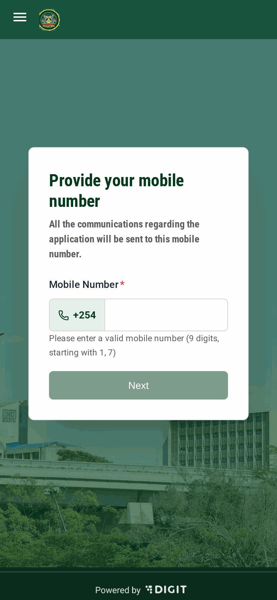 ) | Resident: sign in with your phone number. The one-time code arrives by SMS. | The resident types their mobile number: nine digits, starting with 7 or 1, without the leading zero. A one-time code arrives by SMS. It is valid for 15 minutes, and a new code can be requested after three minutes. |
| 3 | Code entered; resident home | — | New residents are asked for their name once. No national ID is needed. |
| 4 | Step 1 of 3: complaint type and sub-type (cms-pilot/41-create-step1-phone.png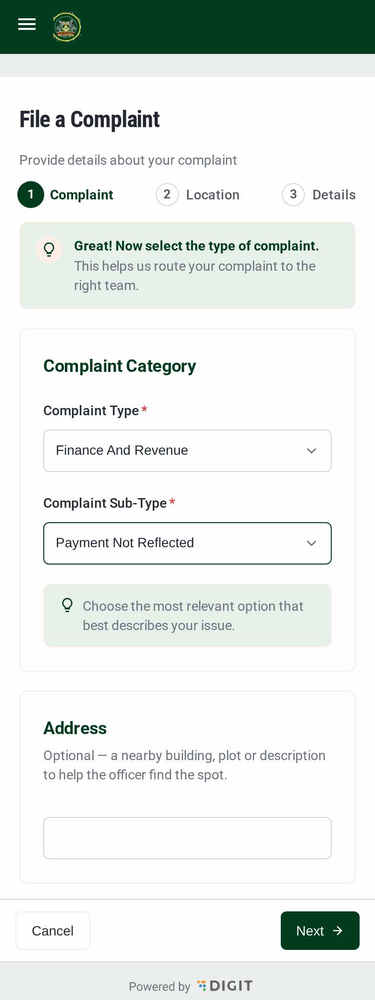 ) | Step 1 of 3: choose the complaint type and sub-type. The lists are in A–Z order. | Step one: what is the problem? Choose the type, then the sub-type. The lists are in alphabetical order, and "Others" is always last. [pause] If nothing fits, choose Others. |
| 5 | Step 2 of 3: sub-county, ward, map (cms-pilot/42-create-step2-phone.png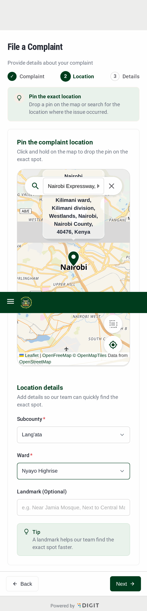 ) | Step 2 of 3: pick the sub-county and ward, and move the pin to the exact spot. | Step two: where is it? Choose the sub-county and the ward. The map starts at the county centre — [point at pin] — so drag the pin to the exact spot, or use "my location". |
| 6 | Step 3 of 3: description, consent, photos (cms-pilot/43-create-step3-phone.png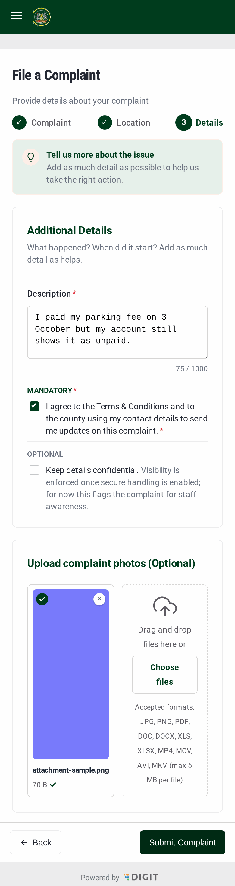 ) | Step 3 of 3: describe the problem, add a photo if you have one, and accept the terms. | Step three: describe what happened. Photos, videos and documents are optional — up to five files, five megabytes each. The terms box must be ticked; Submit stays disabled until it is. "Keep details confidential" is optional and asks staff to treat the complainant's details with extra care. |
| 7 | Submit; success page with complaint number (cms-pilot/44-success-page-phone.png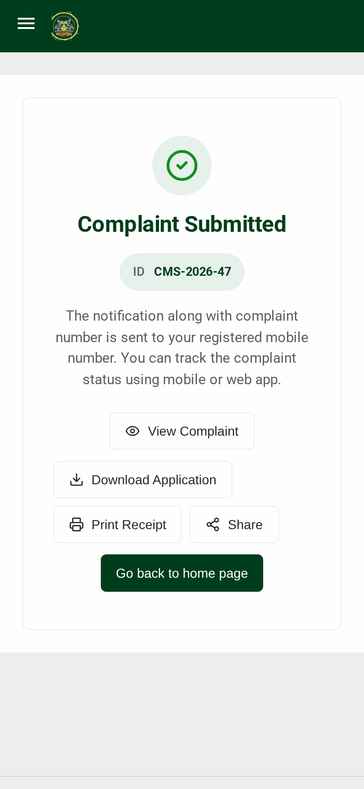 ) | Submit. The complaint number appears at once. | The complaint number appears at once and is sent by SMS. On Bonga numbers look like B-N-G, the year, and a number; on Bomet, B-F-H with six digits. |
| 8 | Success page buttons | Filed. Download or print the PDF application; on a phone you can also share it. | The resident can download or print the official PDF application. On a phone they can also share it — for example on WhatsApp. |
| 9 | End card | — | If a resident calls about any of these steps, open procedure L1-03 in the support package. |
V02 — The front desk files on a resident's behalf
Recorded: 02-staff-files-on-behalf.webm (cms-pilot, desktop). Length: about 2 minutes. Officer: a CSR (front desk / call centre).
| # | Screen | Caption | Narration |
|---|---|---|---|
| 1 | Employee sign-in (cms-pilot/03-employee-login.png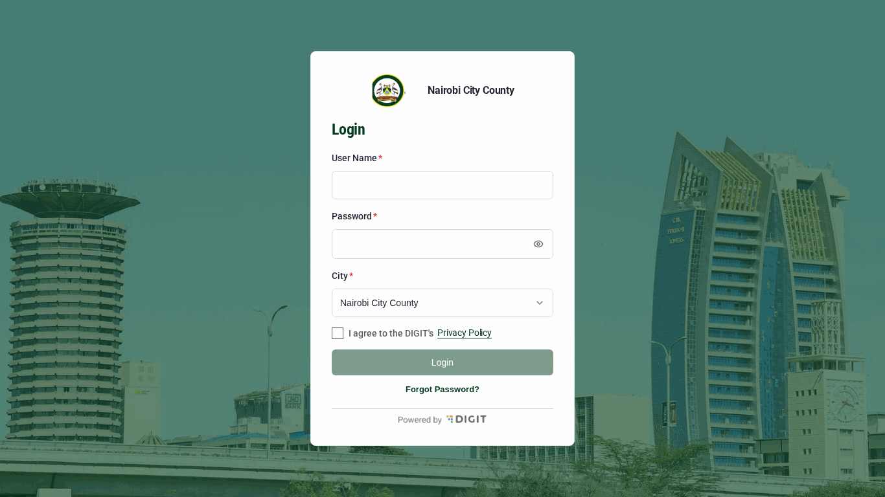 ) | — | Front-desk and call-centre staff use the employee site. Sign in with your user name and password, choose the county, and accept the privacy policy. |
| 2 | Create Complaint form (cms-pilot/20-create-complaint-staff.png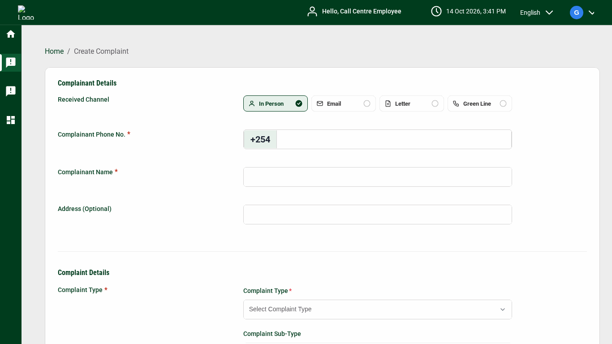 ) | Front desk: a resident calls or walks in. Open Create Complaint. | When a resident calls or walks in, open Create Complaint from the menu. |
| 3 | Form filled (cms-pilot/22-create-complaint-staff-filled.png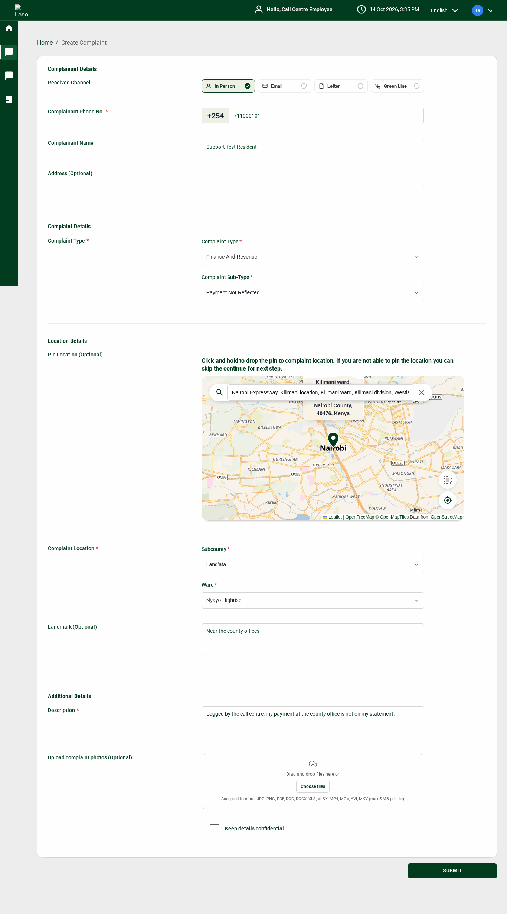 ) | Enter the resident's phone number and name, pick the category and location, describe the problem. | Type the resident's phone number and name, then the category, sub-county and ward, and a description in the resident's words. Choose the channel — phone call, walk-in and so on. |
| 4 | Submit; success page (cms-pilot/23-staff-complaint-success.png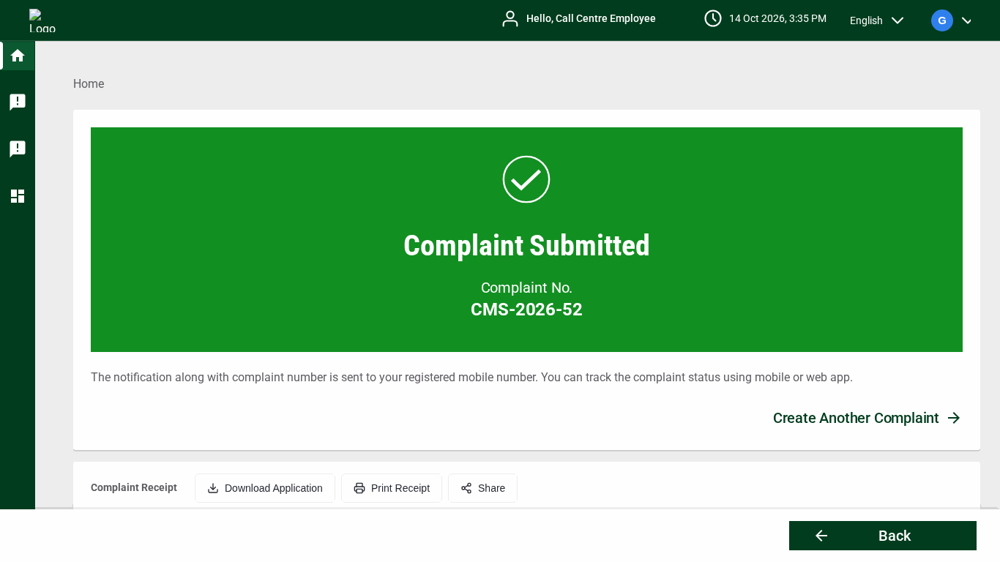 ) | Submit. The resident receives the complaint number by SMS. | Read the complaint number back to the resident. They also receive it by SMS. You can download or print the PDF application for them. |
| 5 | End card | — | The complaint now follows the same path as one filed by the resident. |
V03 — The GRO assigns a complaint (Bonga)
Recorded: 03-gro-assigns.webm (cms-pilot, desktop). Length: about 3 minutes. Officer: GRO. On Bomet this step does not exist: complaints go straight to the department officer.
| # | Screen | Caption | Narration |
|---|---|---|---|
| 1 | Employee home (bonga/10-employee-home-gro.png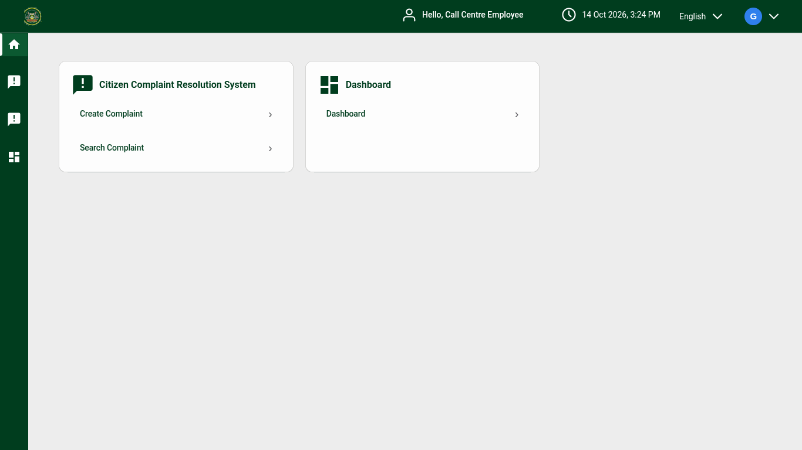 ) | — | This is the officer's home page. The greeting shows the officer's designation; the clock and language menu are on the right. |
| 2 | Profile and language menus (bonga/11-employee-profile-menu.png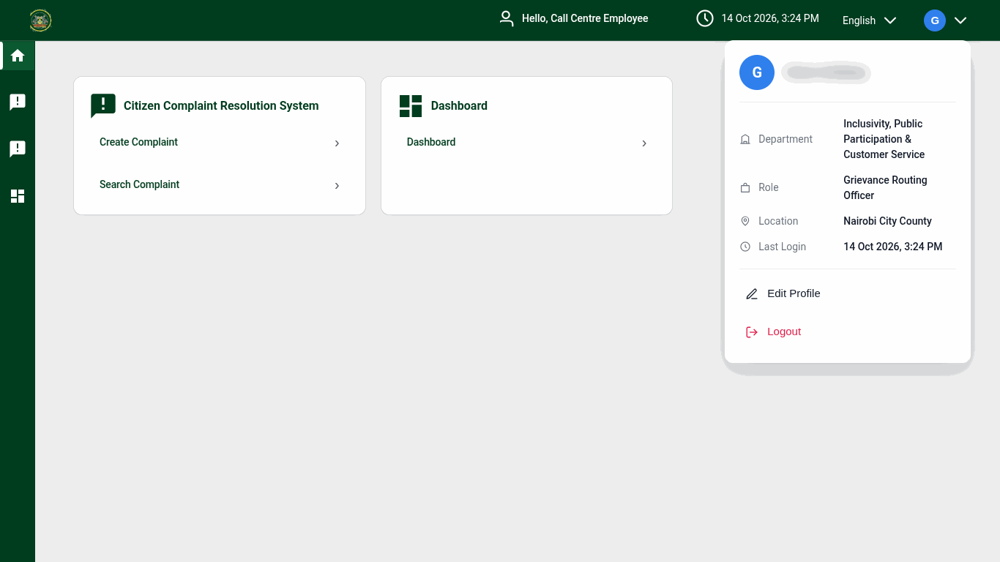 ,bonga/12-employee-language-menu.png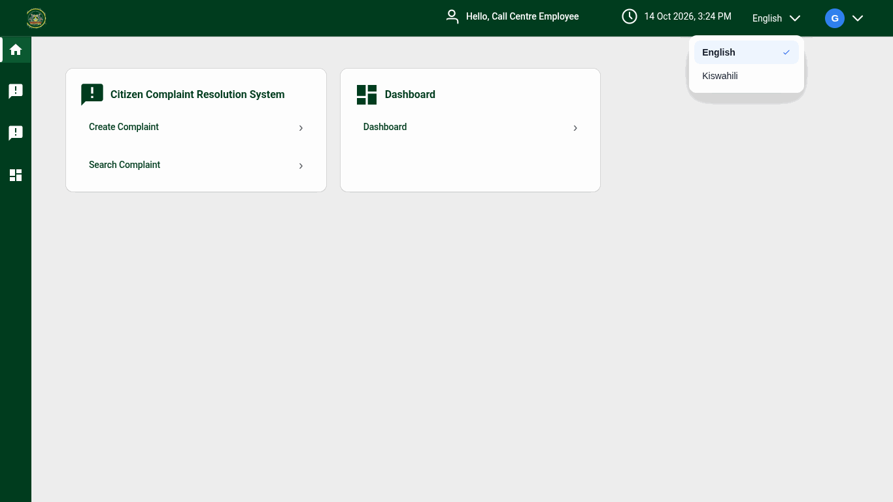 ) | — | The profile menu holds the officer's details and Logout. The language menu switches between English and Kiswahili. |
| 3 | Inbox (cms-pilot/13-inbox-gro.png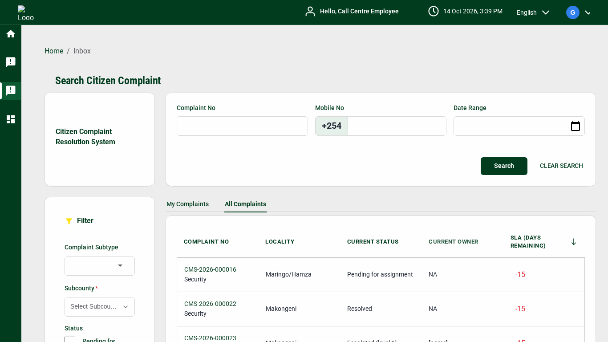 ) | GRO: new complaints wait in the inbox for assignment. | On Bonga every new complaint waits in the GRO's inbox with the status "Pending for assignment". Use the filters to narrow by status, type or ward; search by number when you have one. |
| 4 | Complaint details (cms-pilot/15-complaint-details-gro.png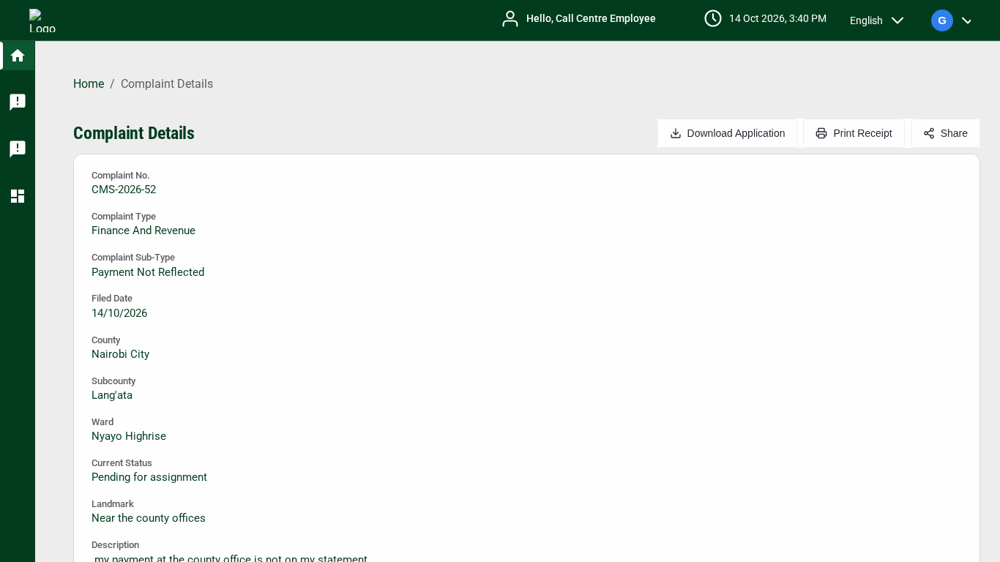 ) | Open the complaint, check the details, then Take Action. | Open the complaint. Check the type and the location — [point at map] — then choose Take Action. |
| 5 | Take Action → Assign dialog (cms-pilot/18-assign-dialog-list.png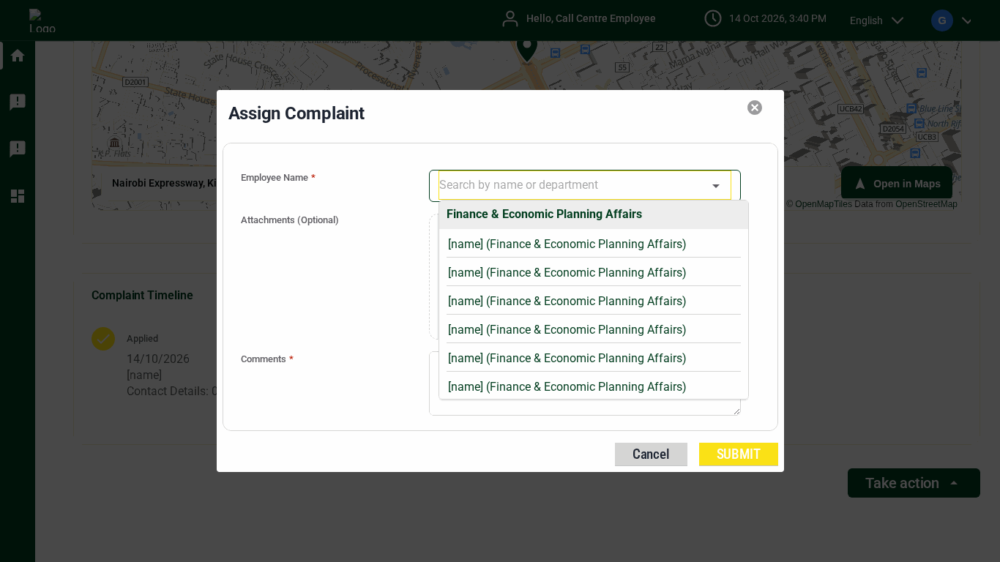 ) | Assign: pick the officer. Only last-mile officers are listed. | Assign sends the complaint to a last-mile officer. The list shows active last-mile officers only, and you can search it by name. Add a comment if it helps the officer. |
| 6 | Submit; status changes | — | The status changes to "Pending at last-mile officer". The officer sees it in their inbox at once. |
| 7 | Reject dialog, not submitted (cms-pilot/19-reject-dialog.png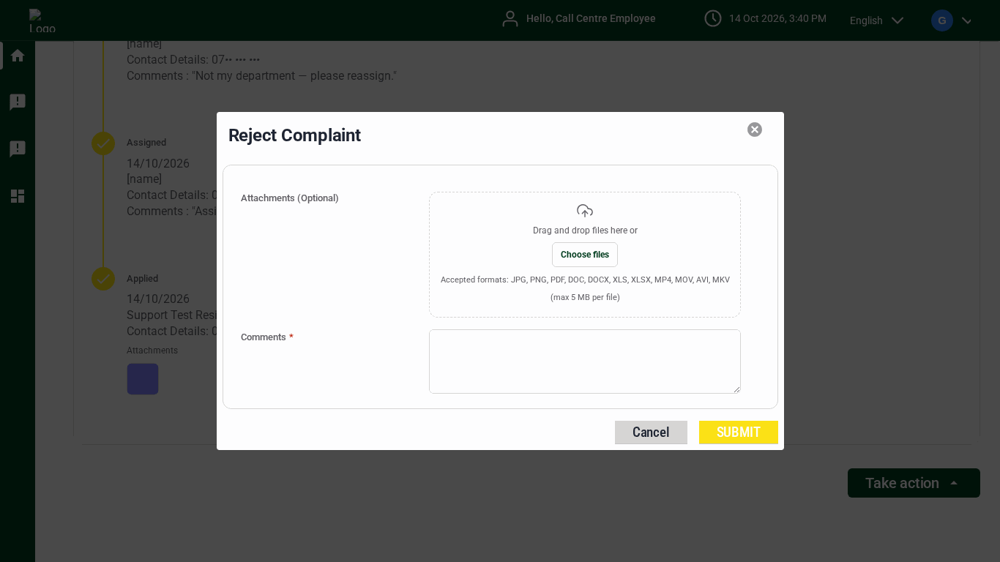 ) | — | If the complaint is not something the county can act on, Reject it with a reason. The resident is told and can still rate or reopen it within three days. |
| 8 | End card | — | Lost complaints? See procedure L1-02: find a complaint and see who holds it. |
V04 — The officer resolves, escalates or sends back
Recorded: 04-officer-works-complaints.webm (cms-pilot, desktop). Length: about 4 minutes. Officer: last-mile officer (PGR_LME).
| # | Screen | Caption | Narration |
|---|---|---|---|
| 1 | Officer inbox (cms-pilot/30-inbox-lme.png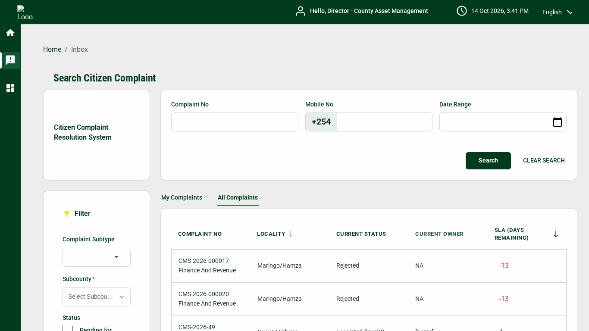 ) | Last-mile officer: the inbox shows the complaints assigned to you. | The last-mile officer's inbox shows complaints assigned to them and their department. |
| 2 | Complaint details with timeline (cms-pilot/31-complaint-details-lme.png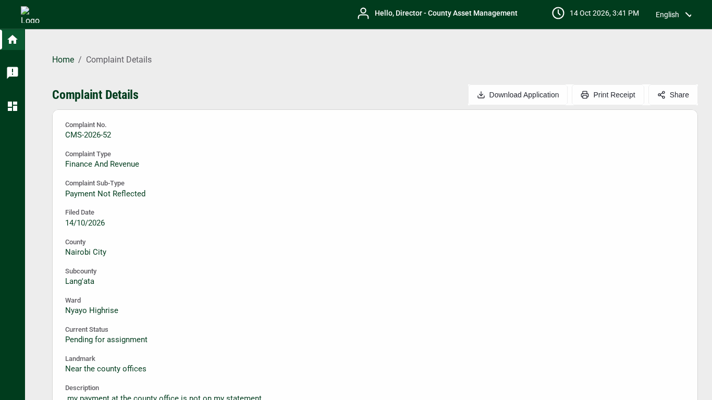 ) | Open the complaint. The timeline shows every step so far. | The timeline at the bottom shows every step: filed, assigned, and by whom. |
| 3 | Take Action → Resolve (cms-pilot/34-resolve-dialog.png (screenshot to follow)) | Resolve: describe what was done. A photo of the fix can be attached. | When the work is done, choose Resolve. Describe what was done in words the resident will understand, and attach a photo of the fix if you have one. The resident is told and can rate it. |
| 4 | Take Action → Escalate (cms-pilot/35-escalate-dialog.png (screenshot to follow)) | Escalate: pass the complaint to the next level and choose the senior officer. | If a decision is needed above your level, Escalate it. On Bonga it goes to the Chief Officer, then to the CECM. The complaint leaves your inbox — it is now the senior officer's. Complaints also escalate automatically when they miss their deadline. |
| 5 | Take Action → Reassign to GRO (cms-pilot/36-reassign-to-gro-dialog.png (screenshot to follow)) | Reassign to GRO: send the complaint back to the GRO queue, with an optional comment. | If the complaint belongs to another department, use Reassign to GRO. It goes back to the GRO's queue, and a notice confirms it for five seconds. This action exists on Bonga only. |
| 6 | Explain missing actions | — | If an action you expect is missing, check the status: an escalated complaint belongs to the next tier, and a resolved one belongs to the resident. "Failed to update complaint" usually means someone acted first — reload the page to see the real status. |
| 7 | End card | — | Procedure L1-05 covers "no Take Action" and "Failed to update complaint". |
V05 — The resident rates, reopens or withdraws
Recorded: 05-resident-rates-reopens-withdraws.webm (cms-pilot, phone). Length: about 3 minutes.
| # | Screen | Caption | Narration |
|---|---|---|---|
| 1 | My complaints (cms-pilot/46-my-complaints-phone.png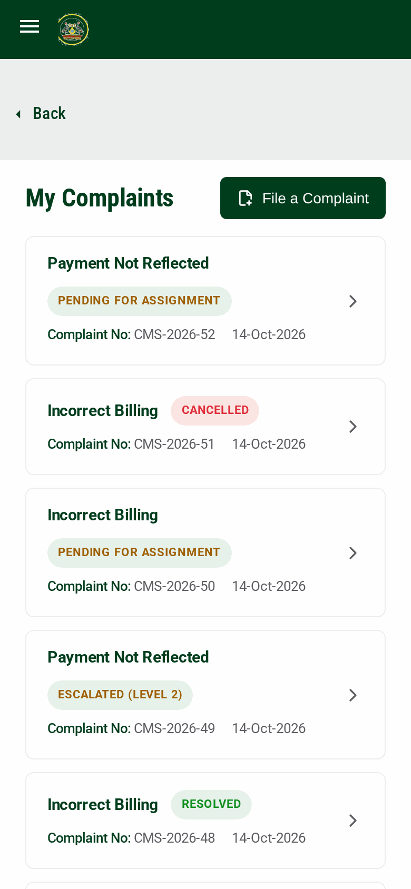 ) | — | Residents see all their complaints under My Complaints, with the current status. |
| 2 | Resolved complaint details and PDF buttons (cms-pilot/47-complaint-details-phone.png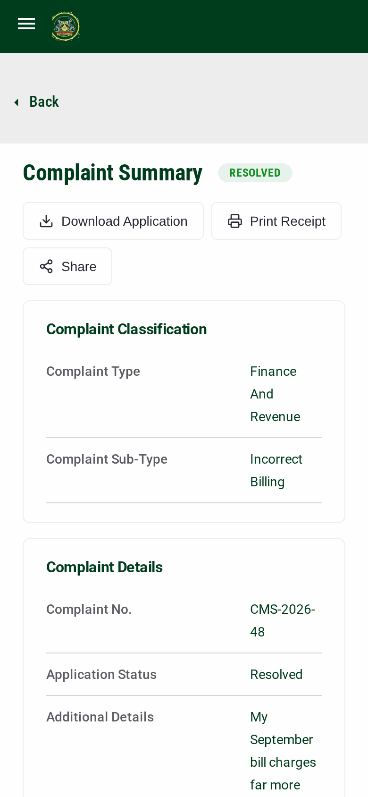 ) | Resolved: the timeline shows every step. Download, print or share the PDF application. | A resolved complaint shows what the officer did. The PDF application can be downloaded, printed, or — on a phone — shared. |
| 3 | Rate (cms-pilot/50-rate-page-phone.png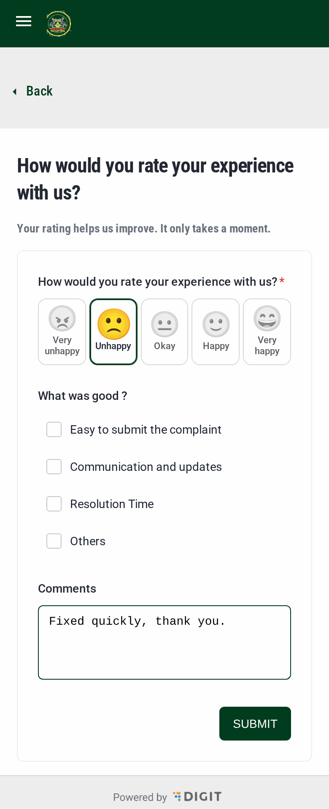 ) | Rate: choose one of the five faces. | Rating closes the complaint. Choose one of five faces and add a comment if you like. |
| 4 | Reopen: reason, then details (cms-pilot/52-reopen-reason-phone.png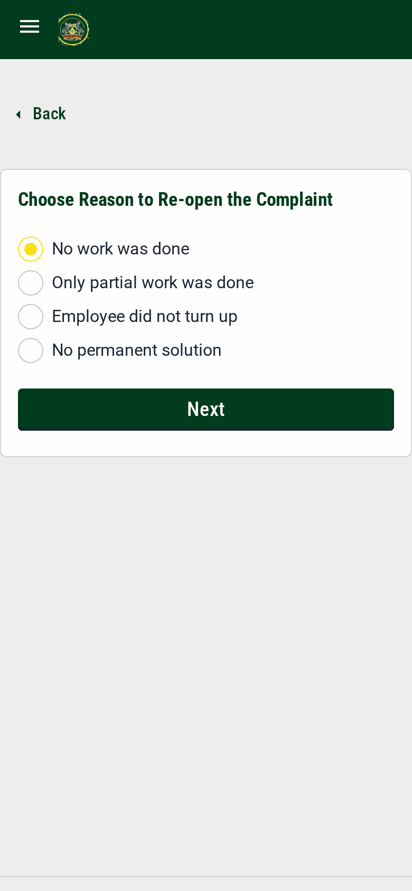 ,53-reopen-details-phone.png (screenshot to follow)) | Re-open: within 3 days of the update, with a reason. | If the problem is not fixed, Reopen it within three days of the resolution, with a reason. On Bonga it returns to the GRO; on Bomet to the department officer. After three days the button disappears — that is the rule, not a fault. |
| 5 | Withdraw (cms-pilot/54-withdraw-confirm-phone.png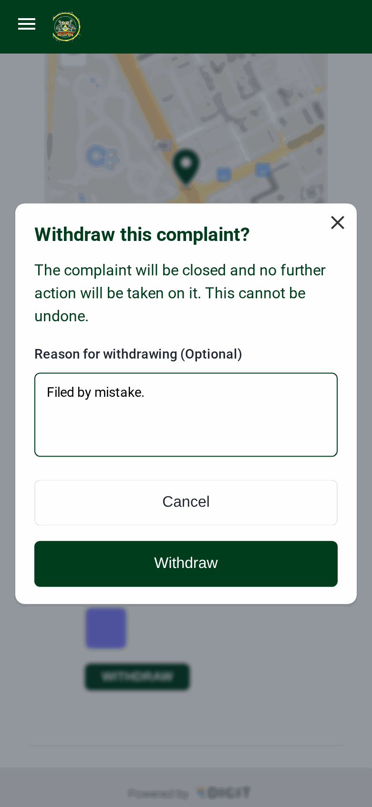 ) | Withdraw: within 1 day of filing, while it is still waiting for assignment. | A resident who filed by mistake can withdraw. On Bonga: within one day, and only while the complaint is waiting for assignment. On Bomet: within three days. A withdrawn complaint cannot be reopened. |
| 6 | End card | — | Questions about these windows: procedure L1-04. |
V06 — Leadership dashboard and export
Recorded: 06-dashboard-export.webm (cms-pilot, desktop). Length: about 2 minutes.
| # | Screen | Caption | Narration |
|---|---|---|---|
| 1 | Dashboard (cms-pilot/24-dashboard.png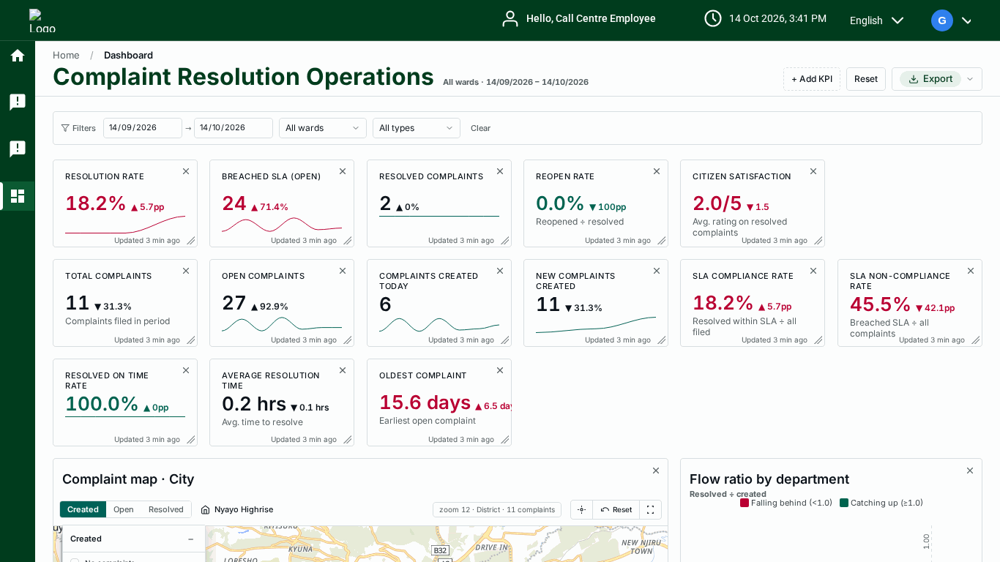 ) | Leadership: the dashboard shows volumes, resolution and escalation by area and category. | The dashboard shows how many complaints came in, how many were resolved on time, and where they escalate — by sub-county, ward and category. |
| 2 | Date range and drill-down | — | Change the date range at the top. Select a sub-county to drill down to its wards. |
| 3 | Export menu (cms-pilot/26-dashboard-export-menu.png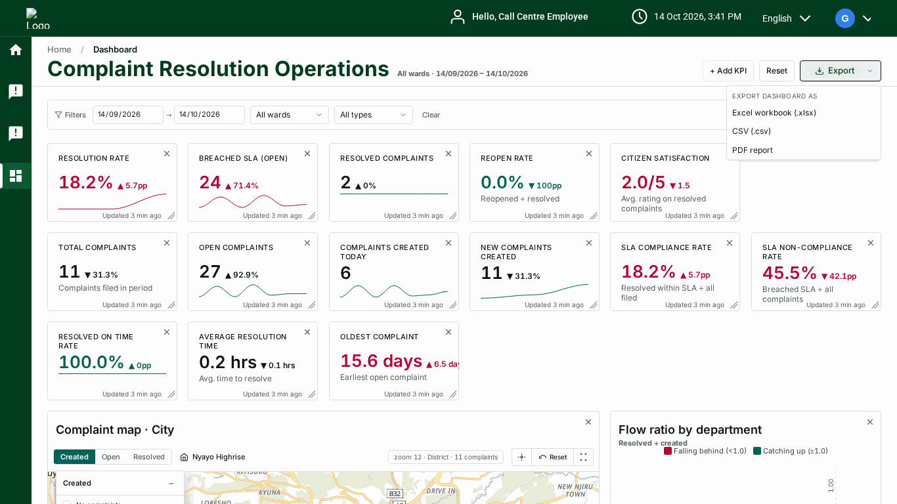 ) | Export: Excel workbook, CSV or a PDF report. | Export gives an Excel workbook, a CSV file or a PDF report of what is on screen. |
| 4 | End card | — | An empty dashboard for every leader is an L2 ticket: see the support matrix, row 17. |
V07 — Taking a ticket: the first five minutes (L1)
Storyboard only. Record on a desk computer with a test ticket. Length: about 4 minutes.
| # | Screen | Caption | Narration |
|---|---|---|---|
| 1 | Ticket form | Collect the facts first. | Every ticket starts the same way. Before you try to fix anything, collect eight facts. |
| 2 | Checklist (support matrix §1.2) | County · who · complaint number · message · time · device · reload · others | County and site address. Who is affected — resident or officer, and the officer's user name. The complaint number. The exact message, as a screenshot. The date and time to the minute. Phone or computer, and which browser. Whether a hard reload changes anything. And whether anyone else sees the same. |
| 3 | Screenshot being covered with boxes | Cover names and phone numbers. | Before you attach a screenshot, cover the resident's name, phone number and address. The complaint number is enough to find everything else. |
| 4 | Severity table | Set the severity. | Set the severity: S1 if the site is down or personal data is exposed; S2 if a main flow is broken for many people; S3 for one user; S4 for questions and requests. |
| 5 | Matrix row lookup | Find the row in the matrix. | Find the matching row in the support matrix. It tells you what to check, who owns it, and when to escalate. |
| 6 | End card | — | Procedure L1-01 is the written version of this video. |
V08 — Reading a complaint: status, timeline and who holds it (L1)
Storyboard; uses the recorded screens. Length: about 3 minutes.
| # | Screen | Caption | Narration |
|---|---|---|---|
| 1 | Inbox search box | Search by complaint number. | Start from the complaint number. On Bonga numbers have no leading zeros, and search accepts both forms. |
| 2 | Details: Current Status (bonga/15-complaint-details-gro.png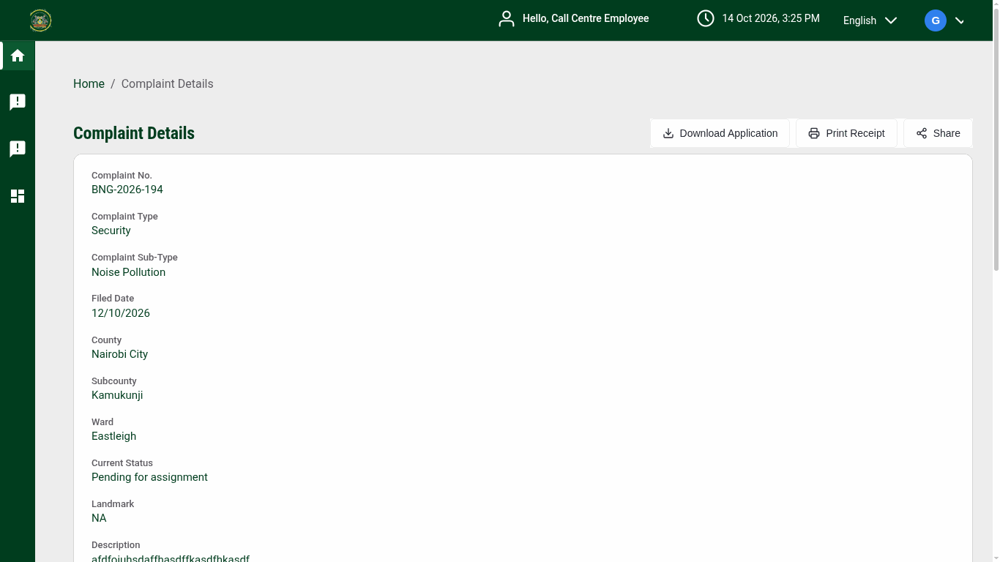 ) | The status tells you whose turn it is. | The current status tells you whose turn it is. Pending for assignment: the GRO. Pending at last-mile officer: the department officer. Escalated level one or two: the Chief Officer or the CECM. Resolved: the resident. |
| 3 | Timeline (cms-pilot/32-complaint-details-lme-full.png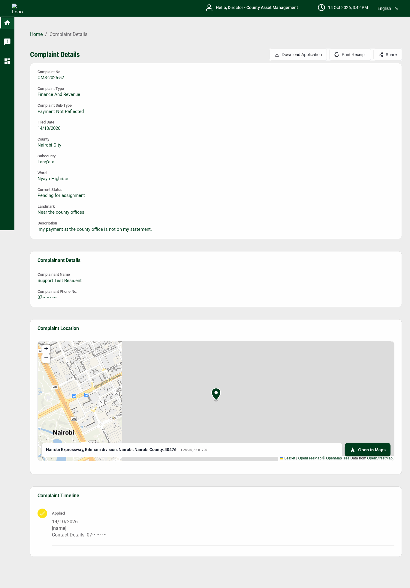 ) | The timeline shows who did what, and when. | The timeline lists every step with its time. The last row is the current step. |
| 4 | Role table (matrix §1.4) | Match the status to the role. | Match the status to the roles in the support matrix. If the person asking is not in that role, the complaint is not lost — it is with someone else. |
| 5 | End card | — | Procedure L1-02. |
V09 — "Why can't I…?" — windows and roles (L1)
Storyboard. Length: about 3 minutes. Five questions, one scene each.
| # | Question | Narration |
|---|---|---|
| 1 | "Reopen is missing." | Reopen is offered for three days after the resolution. After that the button disappears and the server refuses it. The resident can file a new complaint and quote the old number. |
| 2 | "Withdraw does nothing / is missing." | Bonga: within one day of filing, and only while the complaint waits for assignment. Bomet: within three days. Never after a reopen. |
| 3 | "There is no Take Action." | Take Action appears only for roles that may act at the current status. An escalated complaint belongs to the next tier. |
| 4 | "Escalate is not in the list." | On Bonga, escalation goes from the last-mile officer to the Chief Officer and then the CECM; the CECM has no further level. |
| 5 | "Share is missing on my computer." | On computers the PDF application has Download and Print. Share is for phones, where it opens the phone's share sheet. |
V10 — Configurator tour, read-only (L2)
Storyboard; screenshots captured on cms-pilot. Record on cms-pilot as ADMIN, read-only. Length: about 5 minutes.
| # | Screen | Narration |
|---|---|---|
| 1 | Configurator sign-in (cms-pilot/60-configurator-login.png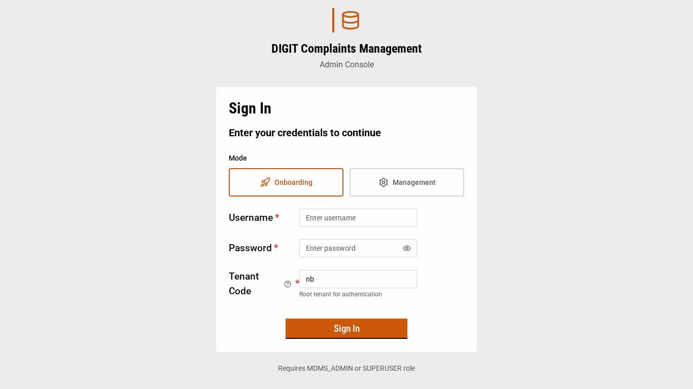 ) | The configurator is the county's settings console at /configurator/. Sign in with an administrator account. Every change here is live for the county at once. |
| 2 | Home (cms-pilot/61-configurator-home.png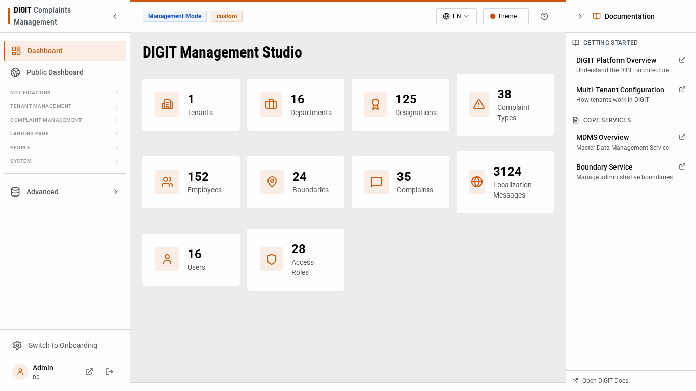 ) | The menu groups the settings: complaint types, labels, permissions, workflow, people and the tenant itself. |
| 3 | Complaint types (cms-pilot/62-configurator-complaint-hierarchy.png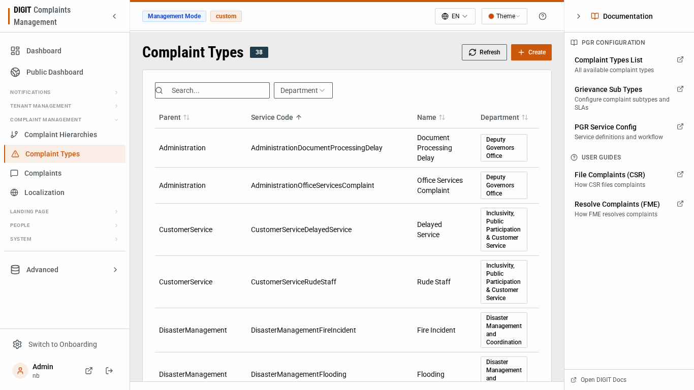 ) | Complaint types and sub-types, with their department and deadline in hours. On Bomet the department drives automatic assignment. |
| 4 | Labels (cms-pilot/63-configurator-localization.png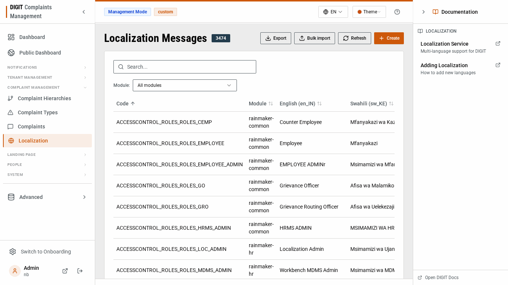 ) | Every word on screen is a label with a code. A code shown on screen instead of words means the label is missing. |
| 5 | Role permissions (cms-pilot/64-configurator-role-actions.png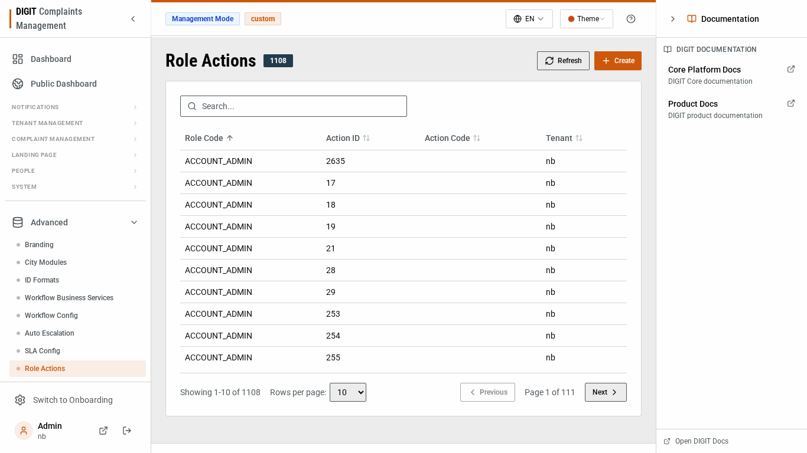 ) | Which role may call which action. Changes take up to 15 minutes to apply, because the access-control service caches them. |
| 6 | Workflow (cms-pilot/65-configurator-workflow.png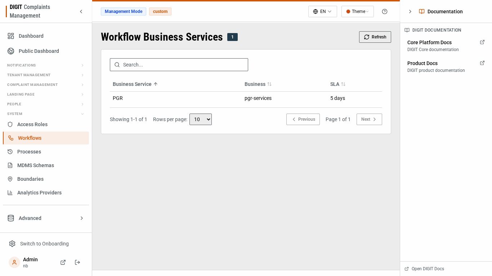 ) | The complaint workflow: statuses, actions and the roles allowed. Change it only through the documented procedure. |
| 7 | Employees (cms-pilot/66-configurator-employees.png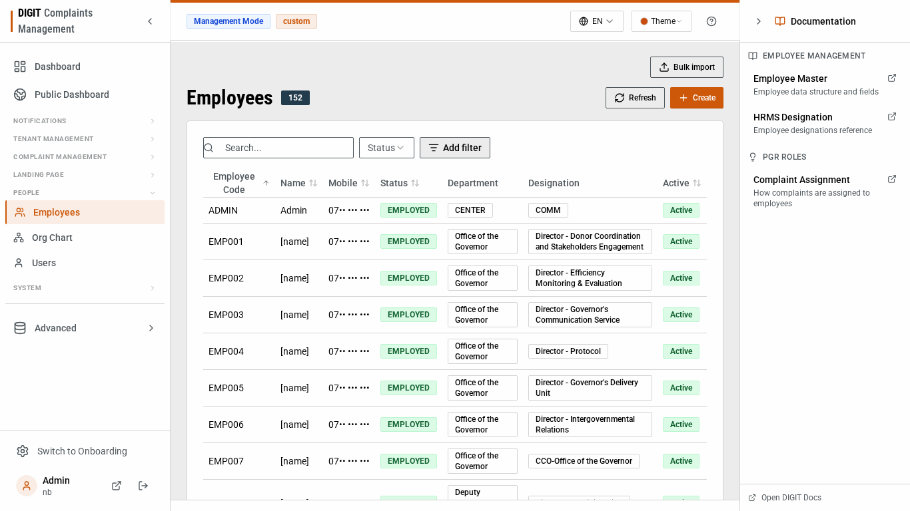 ) | Officers, their roles, department and wards. Most "I can't see my complaints" tickets end here. |
| 8 | Notification log (cms-pilot/68-configurator-notification-log.png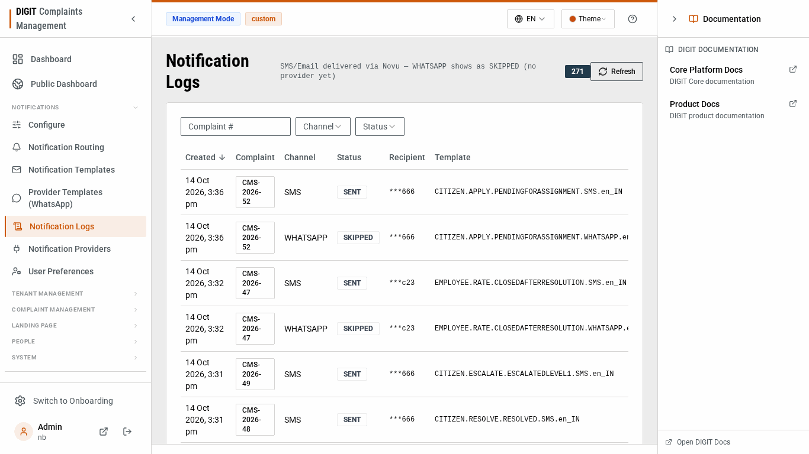 ) | Every SMS and e-mail the system tried to send, with its status: sent, skipped or failed. |
| 9 | End card | Procedures L2-01 to L2-06. |
V11 — Fixing a raw label on screen (L2)
Storyboard. Record on cms-pilot. Length: about 4 minutes.
| # | Screen | Narration |
|---|---|---|
| 1 | Screen showing a raw key (for example CS_GEOLOCATION_ERROR) | A code in capitals on screen means the label for that code is missing in the current language. |
| 2 | Configurator → Labels, search the code | Search for the code in the labels screen, for English and for Kiswahili. |
| 3 | Add the message in both languages | Add the message in both languages. Use the wording the county approved. |
| 4 | Cache-bust call (terminal, token hidden) | The label service caches messages, so clear its cache. Without this step the old text stays. |
| 5 | Hard reload in the browser; the words appear | Reload the page. Browsers keep labels for up to a day, so ask users to reload too — after the next deploy it happens automatically. |
| 6 | End card | Procedure L2-02. |
V12 — An officer sees too few or too many complaints (L2)
Storyboard. Record on cms-pilot with a test officer. Length: about 5 minutes.
| # | Screen | Narration |
|---|---|---|
| 1 | Officer inbox with "No Results Found" | What an officer sees depends on three things: their roles, their department and their wards, and the county's access policy. |
| 2 | Configurator → Employees → the officer | Open the officer's record. Check the roles, the current assignment's department, and the jurisdiction. |
| 3 | Access policy on action 2008 (read-only) | The access policy decides which complaints each role sees, and on Bomet whether names and phone numbers are shown. |
| 4 | After a change: wait or restart | Role changes reach the access-control service within 15 minutes. |
| 5 | Officer reloads; complaints appear | Ask the officer to sign out and in again, then check with them — not as an administrator. |
| 6 | Warning card | If an officer sees personal data they should not, that is a security incident: escalate to L3 immediately. |
V13 — SMS and OTP not received (L2)
Storyboard. Length: about 4 minutes.
| # | Screen | Narration |
|---|---|---|
| 1 | Configurator → Notification log, filtered by complaint number | Start with the notification log. Search by complaint number. |
| 2 | Row: SENT | SENT means the gateway accepted it. If the resident did not receive it, check the number on the complaint and the phone's network. |
| 3 | Row: SKIPPED / no row | SKIPPED, or no row at all, means the system did not try — for example, there is no message for Withdraw on either county yet. |
| 4 | Row: FAILED with error | FAILED means the gateway refused. Note the error code and escalate; never copy gateway credentials into the ticket. |
| 5 | End card | Procedure L2-06. |
V14 — Upload rejected (L2)
Storyboard. Length: about 3 minutes.
| # | Screen | Narration |
|---|---|---|
| 1 | Upload area with the accepted formats (cms-pilot/43-create-step3-phone.png) | The upload box lists the accepted formats and the limit: five files, five megabytes each. The browser refuses larger files before they are sent. |
| 2 | "Request failed with status code 413" | A 413 means the web server refused the size. If the file was under five megabytes, the server limit is wrong: that is L2. |
| 3 | "This file failed a security scan" | When virus scanning is on, an infected file is refused and kept in quarantine. Ask for a different file. |
| 4 | "File upload is temporarily unavailable" | The scanner is down or starting. Uploads are refused rather than accepted unscanned. If everyone sees it, escalate as S2. |
| 5 | End card | Procedure L2-07. |
V15 — Changing the reopen or withdraw window (L2)
Storyboard. Record on cms-pilot only. Length: about 4 minutes.
| # | Screen | Narration |
|---|---|---|
| 1 | The county's written request | Window changes are county decisions. Start from a written request with an approver. |
| 2 | Read the current UIConstants record (city and state) | Read the current record for the county and its state record; the service uses the county's first. |
| 3 | Edit with the MDMS administrator role | The configurator edits the reopen window only. The withdraw window and the per-action rules need an API update with the MDMS administrator role. |
| 4 | Wait 60 seconds; test on cms-pilot | The complaint service caches these values for 60 seconds. Test the new window on cms-pilot before the live site. |
| 5 | End card | Procedure L2-03. |
V16 — Reproducing a defect on cms-pilot and handing it over (L3)
Storyboard. Length: about 5 minutes.
| # | Screen | Narration |
|---|---|---|
| 1 | Ticket with L1 evidence | Start from the L1 evidence: county, number, time, message, device. |
| 2 | build-info.json in a new tab | Record the build id the site serves, so engineering knows exactly which code ran. |
| 3 | Reproduce on cms-pilot with a test officer, DevTools Network tab open | Reproduce on cms-pilot with the same role, not as an administrator. Keep the Network tab open. |
| 4 | Failed request: copy the response body (personal data removed) | Copy the failing request's address, status and error code. Remove personal data. |
| 5 | Defect report template | Write: steps, expected, actual, build id, error code, time, county, and whether it reproduces on cms-pilot. |
| 6 | End card | Procedure L3-01. |
V17 — Deploy verification and rollback (L3)
Storyboard. Length: about 6 minutes.
| # | Screen | Narration |
|---|---|---|
| 1 | docker ps before the deploy (terminal) | Before any deploy, record what is running: the image of every service. That is your rollback point. |
| 2 | After the deploy: build-info.json matches | After the deploy, the build id the site serves must match the one you built. Open tabs pick it up by themselves. |
| 3 | Health checks through the gateway | Run the health checks for the core services. |
| 4 | Smoke flow on cms-pilot | File, assign and resolve one test complaint on cms-pilot — never on a live site. |
| 5 | Rollback | To roll back, set the previous image tag and recreate only that service. There is no database rollback, so check for migrations before a deploy. |
| 6 | End card | Procedures L2-09 and L3-02. |
V18 — Escalation job diagnostics (L3)
Storyboard. Length: about 4 minutes.
| # | Screen | Narration |
|---|---|---|
| 1 | pgr-services log: "Escalation scan complete" | The escalation job runs every five minutes and logs a summary: scanned, escalated, skipped. |
| 2 | A skipped complaint: "no current assignees" / "No supervisor found" | A complaint escalates only if it has a named assignee, the assignee has a supervisor in HR records, and the workflow allows Escalate for the system role at that status. |
| 3 | EscalationConfig timers | Timers come from the county's escalation settings. On Bomet, 11 categories still carry two-minute test timers. |
| 4 | End card | Procedure L2-08. |
4. Troubleshooting guide — symptoms, screens and messages
← Package index · Support matrix · Procedures
Use this guide when a user reports something specific. Each section shows what the user sees, what it means, what L1 does, and when to escalate. Screenshots: bonga/ images are from the live site (masked), cms-pilot/ images from the test twin.
4.1 Reading what is on screen
| What the user sees | What it means | Owner |
|---|---|---|
Words in capitals with underscores (CS_GEOLOCATION_ERROR, WITHDRAW) | A label is missing for that language. The function usually still works. VERIFIED: on cms-pilot on 14 Oct the GRO's Take Action menu showed WITHDRAW as a raw key next to "Reject" and "Assign". | L2 (L2-02) |
| A toast "Failed to update complaint" | The Take Action request was refused. The page reloads the complaint, so the timeline shows the real status. | L1 (L1-05) |
| The sign-in page appears in the middle of work | The session expired (or a 401 came back). Drafts are kept; sign in again. | L1 |
| "Another account signed in" notice | Someone signed in to a different account in another tab of the same browser (shared desk). Nothing was logged out. | L1 — explain |
| "Something went wrong" full page | The app could not load a page it needed. | L1 reload; L2 if it persists |
| "Under maintenance" page | The site is being updated, or the core services are down. | L2 if unplanned (S1) |
| "Working context unavailable" in the top bar | The officer's HR record could not be read. | L2 (L2-01) |
Error messages and the codes behind them are listed in §4.9.
4.2 Signing in and filing
| Screens | Resident sign-in cms-pilot/06-citizen-login-phone.png; live Bonga bonga/06-citizen-login-phone.png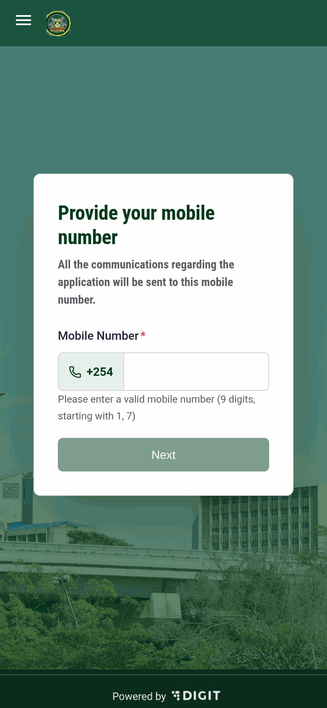 ; officer sign-inbonga/03-employee-login.png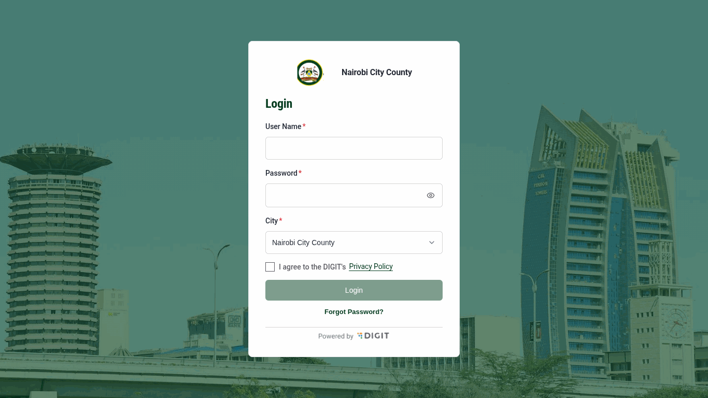 ; filing stepscms-pilot/41-…, 42-…, 43-… |
| Video | V01, V02 |
| Symptom | Likely cause | L1 action | Escalate |
|---|---|---|---|
| "Enter a valid mobile number" | Number typed with 0 or +254, or not 9 digits | Type 9 digits starting with 7 or 1 (e.g. 712345678) | — |
| OTP never arrives | Network delay; wrong number; gateway problem | Wait 3 minutes and press Resend; confirm the number | Nobody in the county receives OTPs → L2 S2 (L2-06) |
| "Invalid OTP" | Old code, or typed wrong | Use the latest code within 15 minutes | — |
| Submit button stays grey on step 3 | Terms box not ticked, or the description is empty | Tick the terms box; write a description | — |
| "File is too large (max 5 MB)" / "You can upload up to 5 files" | Client-side limits | Smaller file; fewer files | — |
| Ward list empty or the pin "is wrong" | The map starts at the county centre (by design) | Choose the sub-county first, then the ward; drag the pin | Ward missing from the list → L2 (boundary data) |
Staff filing fails: FAILED_TO_CREATE_COMPLAINT (or a raw code) | Backend refusal: missing phone/name, ward not chosen, category not valid | Re-check phone, name, category, ward; note the time | Persists after a reload → L3 with the time; INVALID_CASE_RELATED_TO → L2 (old backend image) |
| Officer: "Invalid login credentials" | Wrong password or wrong city | Check the city field and caps lock; use Forgot Password | Account locked or reset fails → L2 |
4.3 Finding a complaint
| Symptom | Likely cause | L1 action | Escalate |
|---|---|---|---|
| Search finds nothing | Typo; zero padding (Bonga numbers have none: BNG-2026-125); wrong county | Retype exactly; try the other county's site | Number valid but missing on both → L2 (S2 if several) |
| "It's not in my inbox" | Someone else holds it: another tier after escalation, the GRO after a send-back, the resident after resolution | Read Current Status and the timeline (bonga/15-complaint-details-gro.png); match it to matrix §1.4 | Status says the officer should hold it but it is not in their inbox → L2 (department / jurisdiction) |
| Resident: "Couldn't load your complaints" | Known issue with more than 10 complaints (limitation 3) | Ask how many complaints they have filed; give them the number to search for | L2 to check the workflow page-limit setting |
4.4 Officer actions
| Screens | Take Action and dialogs: cms-pilot/18-assign-dialog-list.png, 19-reject-dialog, 34-resolve-dialog (screenshot to follow), 35-escalate-dialog (screenshot to follow), 36-reassign-to-gro-dialog (screenshot to follow) |
| Video | V03, V04 |
| Symptom | Likely cause | L1 action | Escalate |
|---|---|---|---|
| No Take Action button | Role does not match the current status (see matrix §1.4); the complaint was escalated | Explain who holds it now | Role matches and button missing after a reload → L2 (L2-04) |
| Assign list does not show the officer | Only active last-mile officers (PGR_LME) are listed | Confirm the officer's role and that they are active | Officer has PGR_LME and is active → L2 (L2-01) |
| "Failed to update complaint" | Someone acted first; the officer lost the role at this status; a backend code | Reload and read the status | Repeats after a reload, or codes DEPARTMENT_NOT_FOUND / INVALID_ASSIGNMENT / INVALID ROLE → L2, then L3 |
| The comment box shows another complaint's text | Fixed in this release (#147) | Reload | Recurs → L3 |
| Reassign to GRO missing on Bomet | It exists on Bonga only | Explain | — |
4.5 Resident follow-up: rate, reopen, withdraw, PDF
| Screens | cms-pilot/46-my-complaints-phone.png, 47-complaint-details-phone, 50-rate-page-phone, 52-reopen-reason-phone, 53-reopen-details-phone (screenshot to follow), 54-withdraw-confirm-phone |
| Video | V05 |
| Symptom | Likely cause | L1 action | Escalate |
|---|---|---|---|
| Reopen missing | More than 3 days since the resolution | Explain; the resident can file a new complaint quoting the old number | County wants a longer window → L2 change request (L2-03) |
| "Complaint is closed" on Reopen | Window passed while the page was open | As above | Refused well inside the window → L3 |
| Withdraw missing | Bonga: more than 1 day, or already assigned; Bomet: more than 3 days; or the complaint was reopened | Explain the rule | Offered but refused inside the window → L3 |
| "Couldn't withdraw the complaint" | Window ended, not the owner, or wrong status | Reload and check the status | Repeats → L3 |
| Share does nothing on a computer | Share is for phones; Download and Print are the computer options | Use Download | Share fails on a phone → L3 |
PDF shows 0000000000 as the county phone | County helpline not configured (limitation 9) | Explain | L2 change request |
4.6 Attachments
| Message | Meaning | L1 action | Escalate |
|---|---|---|---|
| "File is too large (max 5 MB)." | Client limit; nothing was sent | Smaller file | — |
| "Request failed with status code 413" | The web server refused the size | Note the file size | File under 5 MB → L2 (L2-07) |
| "extension does not match the file format" | The file's content does not match its name (renamed file) | Re-save or export the photo normally | Genuine photo refused → L2 |
| "This file failed a security scan." | Virus scanner found something (only when scanning is on) | Ask for a different file; do not ask them to resend the same one | Many reports in a short time → L2 |
| "File upload is temporarily unavailable." | Scanner down or starting; uploads are refused, not let through | Retry in 10 minutes | Everyone affected → L2 S2 |
| Video over about 4 MB fails on Bonga | Open issue #137 | Shorter clip | Already tracked |
4.7 Notifications
| Symptom | Likely cause | L1 action | Escalate |
|---|---|---|---|
| No SMS after filing | Wrong number on the complaint; network; gateway | Check the number (last 3 digits only in the ticket) | Several residents → L2 S2 (L2-06) |
| No SMS after Withdraw / Reassign to GRO (Bonga) / Escalate (Bomet) | No message template for those events (limitation 10) | Explain | — |
| SMS wording wrong | Template text | Copy the exact wording | L2 (notification template) |
4.8 Site and browser
| Symptom | Likely cause | L1 action | Escalate |
|---|---|---|---|
| Two people see different screens | One browser is on an older build | Compare build ids (L1-08); hard reload | Server build differs from what was deployed → L2 |
| Site does not open | Network, or site down | Try mobile data; try the other county's site | Fails on two networks → L2 S1 (L2-09) |
| Very slow; pages stay on the loading dots | Server load or network path | Note the time and page; try again | Many users or more than 15 minutes → L2 S2. Observed 14 Oct: Bonga stopped responding from one network for several minutes at a time, then answered in about 1 s again |
4.9 Message catalogue
The most common messages, what triggers them and who acts. Source: the code on nairobi-prod (products/pgr/src/**, backend/pgr-services/**, backend/filestore-scan-proxy/**, local-setup/kong/kong.yml). VERIFIED from code; whether each label is seeded on a live site is not verified unless stated.
| On screen (or code) | Trigger | Owner |
|---|---|---|
"This file failed a security scan." (CS_FILE_VIRUS_DETECTED) | Scanner: 400 VIRUS_DETECTED | L1 / L2 |
"This file could not be checked…" (CS_FILE_NOT_SCANNABLE) | Password-protected or too complex file | L1 |
"File upload is temporarily unavailable." (CS_FILE_SCAN_UNAVAILABLE) | Scanner 503 SCAN_UNAVAILABLE | L2 |
"The window for reopening this complaint has closed" (CS_CANNOT_REOPEN_COMPLAINT_PAST_DEADLINE) | Reopen after REOPENSLA | L1 |
"Couldn't withdraw the complaint." (CS_WITHDRAW_FAILED) | Withdraw refused (window, owner, status) | L1 |
CS_GEOLOCATION_* shown as raw keys | Location permission / timeout; labels not seeded on either site (issues #54, #55) | L2 labels |
| "Couldn't load your complaints" | My Complaints search failed — often WORKFLOW_NOT_FOUND with more than 10 complaints | L2 |
FAILED_TO_CREATE_COMPLAINT | Staff filing refused by the backend | L1 → L3 |
FAILED_TO_UPDATE_COMPLAINT / "Failed to update complaint" | Take Action refused | L1 → L2 |
CS_COMMON_EMPLOYEE_FETCH_ERROR (raw) | Assign picker could not load officers | L2 |
| "Working context unavailable" | /employee/_context failed | L2 |
INVALID_ACTION "Complaint is closed" / "…withdrawal period has ended" | Server-side window check | L1 |
INVALID_ACTION_WINDOW_CONFIG | The window settings are malformed: every Reopen/Withdraw fails | L2 S2 |
INVALID_ASSIGNMENT | Assignee's department does not match (in practice Bomet) | L2 |
DEPARTMENT_NOT_FOUND | Assignee has no active HR department | L2 |
WORKFLOW_NOT_FOUND | Workflow page limit / missing workflow record | L2 |
IDGEN ERROR | Complaint number could not be generated | L2 S2 |
| HTTP 401 "Authentication required" on a large save | Gateway body-size trap (~8 KB) on admin/label saves | L2 (batch the save) |
| HTTP 403 "You are not authorized to perform this action" | The role lacks the API permission (access control) | L2 (L2-05) |
| HTTP 503 "Could not verify authentication" | User service unreachable | L2 S1/S2 |
4.10 Personal data seen where it should not be
Treat as S1 security and escalate to L3 at once, with the complaint number, the officer's user name and role, the time, and a screenshot with the data covered:
- a resident sees officer names, phone numbers or internal comments in the timeline;
- on Bomet, an officer below CSR / Ombudsman sees a complainant's name or phone;
- a complaint marked confidential shows the complainant's details to an officer who should not see them.
Do not forward the uncovered screenshot to anyone.
5. Procedures — step by step
← Package index · Support matrix · Troubleshooting
Every procedure has the same parts: Prerequisites → Steps → Verify → Expected outcome → Escalate when. Each carries a status:
- VERIFIED — the steps were carried out (on cms-pilot or read-only on a live site) or read from the code, as noted.
- RECOMMENDATION — sensible but not yet carried out end to end; confirm before relying on it, then change the tag.
Server commands assume the Ansible layout (/opt/digit, compose project digit) and sudo. On cms-pilot and the county servers the service ports are not published on the host: reach a service through its container IP (sudo docker inspect -f '{{range .NetworkSettings.Networks}}{{.IPAddress}}{{end}}' <container>) or with sudo docker exec. Replace <KONG> below with http://<kong-gateway container IP>:8000.
Never paste a token, password or OpenBao value into a ticket or document. Commands that need a token read it from a shell variable you set yourself.
L1 procedures (eGov support desk)
L1-01 Take a ticket and collect evidence
Status: VERIFIED (process; derived from the CMS V2.12 handbook and the Kenya issue history).
- Prerequisites: the ticket; this package; nothing else.
- Steps
- Record the eight facts in matrix §1.2.
- Cover names, phone numbers and addresses in any screenshot before attaching it.
- Set the severity (S1–S4, matrix §1.1).
- Find the matrix row (§1.3) and run its L1 checks in order.
- Check §1.6 known behaviour before treating it as a fault.
- Verify: the ticket has all eight facts and no uncovered personal data.
- Expected outcome: the ticket is answered at L1, or handed to L2 with the evidence (L1-09).
- Escalate when: any S1; any row whose "Escalate when" applies.
L1-02 Find a complaint and see who holds it
Status: VERIFIED (cms-pilot, 14 Oct, as GRO EMP130; Bonga read-only, 14 Oct).
- Prerequisites: a support or test officer account with complaint search on the county's site (never ADMIN); the complaint number.
- Steps
- Sign in to the employee site and open the inbox (
/digit-ui/employee/pgr/inbox-v2). - Search by complaint number. On Bonga, numbers have no zero padding (
BNG-2026-194); search also accepts the padded form. On Bomet, numbers are six digits (BFH-2026-000125) and must be typed exactly. - Open the complaint. Read Current Status (
bonga/15-complaint-details-gro.png). - Scroll to Complaint Timeline; the last row is the current step.
- Map the status to the role that acts next (matrix §1.4).
- Verify: you can name the role (and, from the timeline, the officer) that must act next.
- Expected outcome: the user knows where the complaint is and who to contact.
- Escalate when: the number is not found at all (L2); the status says an officer holds it but it is not in their inbox (L2, L2-01).
L1-03 Help a resident sign in and file
Status: VERIFIED (cms-pilot, 14 Oct: five complaints filed through the three steps, CMS-2026-47 to 51; one on a resident's behalf by the CSR).
- Prerequisites: the resident's county; never ask for or record the OTP.
- Steps
- Sign-in: 9-digit mobile number without 0 or +254; the OTP arrives by SMS, is valid 15 minutes, and can be re-sent after 3 minutes.
- Step 1: complaint type and sub-type (A–Z; "Others" last).
- Step 2: sub-county, ward, then move the map pin to the exact spot.
- Step 3: description (required), the terms box (required — Submit stays disabled without it), optional files (up to 5, 5 MB each), optional "Keep details confidential".
- Submit; read the complaint number back. The resident also gets it by SMS.
- For walk-ins and calls, a CSR files on the resident's behalf from Create Complaint, with the resident's phone number and name (V02).
- Verify: the success page shows a complaint number in the county's format.
- Expected outcome: complaint filed; status "Pending for assignment" (Bonga) or "Pending at last-mile officer" (Bomet).
- Escalate when: OTP missing for several residents (L2 S2); an error code after a reload (L3, with the time).
L1-04 Explain the reopen, withdraw and rating windows
Status: VERIFIED (windows read from the live UIConstants on 13 Oct; enforcement verified by the release's automated tests and the QA kits reopen-window-2026-10-09, withdraw-popup-2026-10-09).
- Steps: use matrix §1.5:
- Reopen: within 3 days of the resolution (both counties). Bonga returns it to the GRO; Bomet to the department officer.
- Withdraw: Bonga within 1 day and only before assignment; Bomet within 3 days; never after a reopen.
- Rate: any time after resolution or rejection; rating closes the complaint.
- Verify: compare the dates on the timeline with the window.
- Expected outcome: the resident understands the rule, or a refused action inside the window is escalated.
- Escalate when: the action is refused inside the window after a reload (L3); the county asks for different windows (L2 change request, L2-03).
L1-05 Take Action missing, or "Failed to update complaint"
Status: VERIFIED (role table from the live workflows, 13 Oct; Take Action options observed on cms-pilot 14 Oct: GRO at Pending for assignment sees Reject, Assign, Withdraw).
- Prerequisites: complaint number; the officer's user name and role.
- Steps
- Find the current status (L1-02).
- Check that the officer's role may act at that status (matrix §1.4). Escalated complaints belong to the next tier.
- Ask the officer to reload the complaint. After a failed action the page refreshes itself and shows the real status; someone else may have acted first.
- If an error code was shown, record it exactly.
- Verify: the officer reloads and either sees the action or understands why not.
- Expected outcome: most cases end here (wrong tier, already acted on).
- Escalate when: the role matches and the action is missing after a reload (L2, L2-04);
DEPARTMENT_NOT_FOUND,INVALID_ASSIGNMENTorINVALID ROLE(L2, then L3).
L1-06 Upload rejected
Status: VERIFIED (limits and messages from the code; the 5-file / 5 MB limits and accepted formats shown on the cms-pilot form, 14 Oct).
- Steps
- Ask for the exact message (troubleshooting §4.6).
- Check: at most 5 files, each under 5 MB, type in the list on the form (JPG, PNG, PDF, DOC, DOCX, XLS, XLSX, MP4, MOV, AVI, MKV).
- Ask the resident to re-save or export the photo (renamed files fail the format check), or send a shorter video.
- Expected outcome: the upload succeeds with a compliant file.
- Escalate when:
413for a file under 5 MB; "temporarily unavailable" for everyone; a genuine file of a listed type is refused.
L1-07 PDF application and Share
Status: VERIFIED for Download/Print/Share on phones (QA kit share-popup-2026-10-09, 13/13). The "Share only in the phone view" behaviour is in PR #162 and applies once deployed.
- Steps: on a computer use Download or Print. On a phone, Share opens the phone's share sheet with the PDF attached. If the phone cannot share the file, it is downloaded instead and a notice says so.
- Escalate when: Share fails on Android or iPhone after a reload (L3).
L1-08 Check which build the browser is running
Status: VERIFIED (code: digit-ui-esbuild/src/buildRefresh.js; live build ids captured 13 Oct).
- Steps
- Open
https://<site>/digit-ui/build-info.jsonin a new tab. It shows{"buildId":"…"}— the build the server has. - Ask the user to hard reload (Ctrl+F5; on a phone close and reopen the tab).
- Open tabs switch to a new build on their own: on load, when the tab returns to the foreground after a minute, and every 5 minutes, at the next main screen.
- Expected outcome: after a reload the user has the server's build.
- Escalate when: the server's build id is not the one that was deployed (L2).
L1-09 Hand over to L2
Status: VERIFIED (process).
Hand over with: the eight facts; the matrix row; what L1 checked and the result; the severity; the covered screenshots. Use Part A of the incident template (docs/2.12/operations/incident-report.md).
L2 procedures (platform operators, county IT)
Live-site changes need a named approver from the county and eGov. Do every change on cms-pilot first.
L2-01 Check an officer's roles, department and jurisdiction
Status: VERIFIED (cms-pilot 14 Oct: HRMS employee search as ADMIN returned roles and current-assignment departments for all 152 employees).
- Prerequisites: an account allowed to search HRMS (an MDMS/HR administrator). Read only.
- Steps
- Configurator → Employees, or the API:
- Compare with what the officer needs: role for the status (matrix §1.4); a current assignment with a department; a jurisdiction covering the complaint's ward.
- On Bomet, also check that the role is department-scoped as the access policy expects.
- Verify: the officer signs out and in, then sees the complaint (check with the officer, not as ADMIN).
- Expected outcome: the missing role, department or ward is identified.
- Escalate when: the record is right and the officer still cannot see the complaint after 15 minutes and a fresh sign-in (L3).
L2-02 Add or correct a label
Status: VERIFIED (method used for the 14 Oct cms-pilot sync and the 12 Oct Kiswahili push; the cache-bust step was needed on cms-pilot on 14 Oct).
- Prerequisites: a
LOC_ADMINor SUPERUSER account; the approved wording in English (en_IN) and Kiswahili (sw_KE); the module (rainmaker-pgrorrainmaker-common). - Steps
- Search the current value:
- Upsert both languages (Configurator → Labels, or
POST /localization/messages/v1/_upsertwithtenantId,locale,messages[{code,message,module,locale}]). Keep each request under about 8 KB — larger bodies come back as 401 at the gateway. - Bust the label cache:
curl -s -X POST <KONG>/localization/messages/cache-bust -H 'Content-Type: application/json' -d '{"RequestInfo":{}}' - Hard reload the browser (labels are kept in the browser for up to a day; a new build drops them automatically).
- Verify: the search in step 1 returns the new text, and the screen shows it after a reload.
- Expected outcome: words instead of the raw key, in both languages.
- Escalate when: still raw after the upsert, cache-bust and reload (L3: the screen may not read that key).
curl -s "<KONG>/localization/messages/v1/_search?tenantId=nb&locale=en_IN&module=rainmaker-pgr" | jq '.messages[] | select(.code=="CS_ACTION_WITHDRAW")'L2-03 Check or change the reopen and withdraw windows
Status: VERIFIED for reading (live capture 13 Oct). Changing: VERIFIED on cms-pilot on 14 Oct (sync from Bonga). Changing a live site: RECOMMENDATION — follow the same steps after cms-pilot.
- Prerequisites: the county's written request;
MDMS_ADMIN. - Steps
- Read both the city and the state record:
- Values are milliseconds: 1 day =
86400000, 3 days =259200000. REOPENSLAcan be edited in the configurator (PGR UI Constants).WITHDRAWSLAandactionWindowsneedPOST /mdms-v2/v2/_update/RAINMAKER-PGR.UIConstantswith the full record.- Wait 60 seconds (complaint service cache).
- Verify: on cms-pilot, Reopen just inside and just outside the new window; outside must fail with "Complaint is closed".
- Expected outcome: buttons and server checks follow the new window.
- Escalate when:
UNIQUE_KEY_UPDATE_ERRon save (schema not migrated — applyV20260827000000…sql, seedocs/reopen-window.md); every Reopen fails withINVALID_ACTION_WINDOW_CONFIG(malformed record — S2).
curl -s -X POST <KONG>/mdms-v2/v2/_search -H 'Content-Type: application/json' -d '{"RequestInfo":{},"MdmsCriteria":{"tenantId":"nb","schemaCode":"RAINMAKER-PGR.UIConstants"}}' | jq '.mdms[] | {tenantId, data}'L2-04 Check or change the workflow
Status: VERIFIED for reading (13 Oct capture; method used for the 7 Oct Bonga sync and the 14 Oct cms-pilot sync). Changing a live site: needs an approver.
- Steps
- Read:
curl -s -X POST '<KONG>/egov-workflow-v2/egov-wf/businessservice/_search?tenantId=nb&businessServices=PGR' -H 'Content-Type: application/json' -d '{"RequestInfo":{}}' | jq '.BusinessServices[0].states[] | {state, actions: [.actions[]? | {action, roles}]}' - Save the output before any change: it is your rollback.
- Change only through
POST /egov-workflow-v2/egov-wf/businessservice/_update(roleSUPERUSERorWORKFLOW_ADMIN) with the full edited object. Never edit the workflow tables directly: the service caches definitions for about 15 minutes, and_updateis what clears that cache. - The update is saved asynchronously; search again until the change appears.
- Verify: run the changed transition on cms-pilot with a real officer role.
- Expected outcome: the action appears for the intended roles only.
- Escalate when: the change is refused, or the platform cannot express the request (L3).
L2-05 Grant or check an access-control permission
Status: VERIFIED (grants for the timeline action 2635 applied on both counties, 5 and 9 Oct; access-control role cache of 15 minutes observed). Live change: needs an approver.
- Steps
- Find the action id for the API path (Configurator → Role permissions, or MDMS
ACCESSCONTROL-ACTIONS-TEST). - Check the role has it (
ACCESSCONTROL-ROLEACTIONS.roleactions). - Add the role-action with
MDMS_ADMIN. - Wait up to 15 minutes, or restart access control:
sudo docker restart egov-accesscontrol(container nameegov-accesscontrol; it has no health status — watchsudo docker logsfor "Started"). - Verify: the officer's request no longer returns 403.
- Escalate when: the change would open an endpoint to unauthenticated users — that is a security decision (gateway whitelist parity check), not configuration.
L2-06 Check SMS and OTP delivery
Status: VERIFIED (cms-pilot 14 Oct: the configurator's notification log API returned rows with status SENT, SKIPPED for WhatsApp, and the gateway's response; it needs tenantId in the query).
- Steps
- Configurator → Notification log; filter by complaint number, channel SMS. Or
GET /novu-bridge/novu-adapter/v1/logs?tenantId=nb&limit=50with a Bearer token of an allowed role. - Read the status: SENT (gateway accepted), SKIPPED (not attempted — e.g. WhatsApp has no provider), FAILED (gateway refused; see the error code).
- No row for the event: there is no template for that action (Withdraw, Reassign to GRO on Bonga, Escalate on Bomet) — by design today.
- Server side:
sudo docker logs --since 1h novu-bridge 2>&1 | grep -E 'FAILED|NB_'. - Verify: a test complaint on cms-pilot with a test number (
7110001xx) produces a SENT row. - Escalate when: FAILED rows for every message (gateway credentials or balance — L2 operator with the county); OTP not delivered for anyone (S2).
L2-07 Check an upload and the virus scanner
Status: VERIFIED (code and scanner README). Whether scanning is enabled on either county is NOT VERIFIED (issue #159).
- Steps
- Is scanning on?
sudo docker ps --filter name=filestore-scan-proxy. - Scanner events:
sudo docker logs --since 1h filestore-scan-proxy | grep -E 'virus_detected|scan_unavailable|upload_not_scannable'. - Scanner health:
sudo docker exec digit-clamav clamdcheck.sh. - Size refusals:
sudo tail -n 200 /var/log/nginx/error.log | grep -i 'too large'(limit 25 MB at nginx). - Expected outcome: the refusal is explained (size, type, infected, scanner down).
- Escalate when: the scanner is down (uploads fail closed — S2); 413 below 25 MB at nginx (L2 nginx config); a listed type refused (L3).
L2-08 Check the escalation job
Status: VERIFIED (log lines and preconditions from the code; Bomet timer values from the 13 Oct capture).
- Steps
sudo docker logs --since 20m digit-pgr-services-1 2>&1 | grep -E 'Escalation scan|Escalated complaint|skipping escalation|No supervisor'- For one complaint, check: its status is in the scanned states; it has a named assignee; the assignee's HR record has a supervisor (
reportingTo); the workflow allows Escalate forSYSTEMat that status. - Timers:
RAINMAKER-PGR.EscalationConfig(Bomet: 11 categories at 2-minute test values). - Escalate when: a complaint climbs several levels in one scan; call-centre complaints never escalate on Bomet (L3).
L2-09 Health check and safe restart
Status: VERIFIED (commands from the deploy playbook and runbooks).
- Steps
sudo docker ps --format 'table {{.Names}}\t{{.Status}}\t{{.Image}}'— look forRestarting,unhealthy,Exited.- Health through the gateway: loop over
/pgr-services/health,/egov-workflow-v2/health,/user/health,/mdms-v2/health,/localization/actuator/health,/access/health. - Before restarting, capture the logs (
sudo docker logs --since 30m <container> > /tmp/<container>.log). - Restart one service:
sudo docker restart <container>. To apply a changed setting:sudo COMPOSE_PROFILES=<list> docker compose <same -f files as the deploy> up -d --no-deps <service>. - Never run
docker compose down -v,docker system prune, or a bareup -d. - Verify: the container shows
healthyand the user's flow works. - Escalate when: a service restarts in a loop (L3 with the logs).
L2-10 Verify a deploy
Status: VERIFIED (checklist from the playbook and buildRefresh.js).
- Record
docker psbefore the deploy (rollback point). - After:
curl -s https://<site>/digit-ui/build-info.jsonmatches the build you shipped. - Health checks (L2-09).
- Labels: cache-bust if labels shipped; access control: restart if permissions shipped.
- Smoke flow on cms-pilot (file → assign → resolve with test accounts) — never on a live site.
L3 procedures (engineering)
L3-01 Reproduce on cms-pilot and hand over to engineering
Status: RECOMMENDATION (template; the parts are verified individually).
- Reproduce on cms-pilot with the same role (a test officer or a non-admin employee — never ADMIN).
- Record the build id (L1-08), the failing request (URL, status,
Errors[0].code) with personal data removed, and the time. - Write the report: county, steps, expected, actual, build id, error code, time, reproduces on cms-pilot (yes/no), severity.
- File it following
.github/CONTRIBUTING.md(labelsarea:*, priority).
L3-02 Ship a fix to a county
Status: RECOMMENDATION (branch facts VERIFIED from the release notes).
- Branches: Bonga UI builds from
nairobi-prod; bgrm UI fromnairobi-prod-bgrm-changes(same app plus the Bomet landing page) — merge non-landing changes into both. bgrm's backend isfeat/bomet-uat(imageegovio/pgr-services:bomet-uat-6eb6b85on 13 Oct). - Steps: fix → test on cms-pilot → record
docker pson the target → deploy → L2-10 → keep the previous image tag for rollback (set it back andup -d --no-deps <service>). There is no database rollback; check for new migrations before deploying.
6. Knowledge-transfer guide
A five-session plan to bring a new support engineer from zero to handling CMS Kenya tickets on their own. Each session is about two hours: one hour of material, one hour of hands-on exercises on cms-pilot. L1 agents need sessions 1–3; L2 operators all five; L3 engineers sessions 1, 4 and 5.
Before session 1
| Item | Who provides it |
|---|---|
| A personal cms-pilot officer account (never a shared ADMIN) | eGov platform team |
The test resident numbers to use (7110001xx) — cms-pilot sends real SMS | eGov platform team |
| Read access to the ticket queue | Support lead |
| For L2: SSH access to cms-pilot and the county servers, sudo, and an OpenBao reader role | Platform lead, with county approval |
| Read this package's README and support matrix | The trainee |
Session 1 — The system and the two counties (everyone)
Material
- What CMS is: residents report problems with county services, officers work them, leadership watches the dashboard. Built on DIGIT; this release is CMS V2.12 with Kenya changes.
- The sites: Bonga Nai (Nairobi, tenant
nb) and Bomet Feedback Hub (tenantbo); cms-pilot is Bonga's test twin. Both counties run the same application code (nairobi-prod); only the landing pages differ, and Bomet's backend is a separate build. - The key differences (matrix §1.4):
| Bonga | Bomet | |
|---|---|---|
| Intake | GRO assigns each new complaint | Goes straight to the department officer |
| Escalation | Chief Officer, then CECM | Three department levels |
| Withdraw | 1 day, before assignment | 3 days |
| Complaint number | BNG-2026-125 | BFH-2026-000125 |
| Reassign to GRO | Yes | No |
| Complainant name/phone for officers | Shown to officers in scope | Hidden below CSR / Ombudsman |
- Watch: V01, V02, V03.
Exercises (cms-pilot)
- As a test resident, file a complaint on a phone-size browser window. Note the complaint number.
- As a CSR, file one on the resident's behalf.
- Find both complaints by number in the inbox and state who holds each one.
Session 2 — Officer work and resident follow-up (everyone)
Material
- The status → role table; why "no Take Action" is usually correct behaviour.
- Reopen, withdraw and rating windows (matrix §1.5).
- The PDF application: Download, Print; Share on phones.
- Watch: V04, V05, V08, V09.
Exercises
- As GRO, assign your session-1 complaint to a last-mile officer. As that officer, resolve it.
- As the resident, rate it. Then file another, have it resolved, and reopen it. Where does it go?
- File a third complaint and withdraw it as the resident. Try to withdraw one that is already assigned — what happens on Bonga?
- Answer these as if on the phone: "My Reopen button is gone", "I can't Escalate", "Share does nothing on my laptop".
Session 3 — Taking tickets (L1)
Material
- The eight evidence items; covering personal data; severities S1–S4; the hand-over to L2 (L1-01, L1-09).
- The troubleshooting guide, section by section (part 4).
- What counts as S1: site down, nobody can sign in, personal data exposed (§4.10).
- Watch: V07, V06.
Exercises — the trainer plays the user; the trainee writes the ticket:
- "I filed yesterday and can't find my complaint." (Expected: number, search, status, holder.)
- "There's a strange code
CS_GEOLOCATION_ERRORwhen I press Use my location." (Expected: screenshot, language; L2 label ticket.) - "I'm a Bomet health officer and I can see the complainant's phone number." (Expected: S1 security escalation, data covered.)
- "Nobody in our office receives the SMS." (Expected: S2, L2, event and time.)
Sign-off for L1: the trainee handles exercises 1–4 correctly, using only the matrix and the troubleshooting guide.
Session 4 — Configuration and data (L2)
Material
- Where settings live (V10): complaint types, labels, permissions, workflow, employees, tenants, notification log.
- The caches and how to clear them:
| Cache | Lasts | Clear by |
|---|---|---|
| Workflow definitions | ~15 min | Change only through _update (it clears the cache) |
| Access-control role permissions | ~15 min | Wait, or sudo docker restart egov-accesscontrol |
| Labels on the server | until cleared | POST /localization/messages/cache-bust |
| Labels in the browser | up to a day | Automatic on a new build; or a hard reload |
| Reopen/withdraw windows in the complaint service | 60 s | Wait a minute |
- The 8 KB gateway trap on large saves (401 "Authentication required"): batch label uploads.
- Live changes need a named approver; do everything on cms-pilot first; save the "before" state as the rollback.
- Watch: V11, V12, V13, V15.
Exercises (cms-pilot only)
- Look up an officer's roles, department and wards (L2-01).
- Find a raw label on cms-pilot (the Take Action menu showed
WITHDRAWandREASSIGNTOGROon 14 Oct). Write the upsert for English and Kiswahili and the cache-bust call — do not run it without the platform lead. - Read the reopen and withdraw windows for
nb(city and state record) and convert them to days. - Read the notification log for the complaints you filed and explain each status.
- Read the Bonga-shaped workflow on cms-pilot and draw it as a diagram. Compare it with the table in the matrix.
Session 5 — Servers, deploys and defects (L2, L3)
Material
- Service map: the gateway (Kong) → complaint service (pgr-services) → workflow, users, HR, MDMS, labels, files (with the optional virus scanner), notifications (novu-bridge). The CMS V2.12 handbook covers each in depth (
docs/2.12/operations/). - Container names on the Ansible layout: most are
digit-<service>-1; some keep their own name (egov-accesscontrol,docker-postgres,kong-gateway,novu-bridge). Ports are not published on the host — use container IPs ordocker exec. - Health checks, safe restarts and the commands never to run (L2-09).
- Deploy verification and rollback; build ids; branches per county (L2-10, L3-02).
- The escalation job (L2-08).
- Writing a defect report engineering can act on (L3-01).
- Watch: V14, V16, V17, V18.
Exercises (cms-pilot)
- List the running containers and their images; save it as a rollback record.
- Run the health loop through the gateway.
- Find the last "Escalation scan complete" line and explain the numbers.
- Take one ticket from session 3 and write the L3 defect report for it.
Sign-off for L2: the trainee completes sessions 4 and 5 exercises and shadows two live L2 tickets.
Reference card
| Need | Where |
|---|---|
| Who owns this issue? | Support matrix |
| What does this message mean? | Troubleshooting §4.9 |
| How do I do X? | Procedures |
| What changed in this release, and was it tested? | Traceability matrix |
| Generic operations (Grafana, logs, alerts, incident template) | docs/2.12/operations/ |
| Release notes and known limitations | docs/kenya/RELEASE-NOTES-CMS-KENYA-V2.12.md (PR #160) |
Open questions the support team inherits
These could not be verified while preparing this package. Each needs an owner.
- Which image tags run on Bonga, bgrm and cms-pilot (
docker pson each server). - The live SMS gateway settings and which OTP path each county uses.
- Whether the live gateways run with the larger request-body buffer (the 8 KB 401 trap suggests not).
- The workflow service's page limit on each site (the "more than 10 complaints" problem).
- Whether virus scanning is enabled on either county (issue #159).
- The escalation job's states and system-user setting on each site.
- Which access-control actions exist live for editing complaint types, escalation settings and inbox visibility.
- Who at each county approves configuration changes, and the county contacts for S1 incidents.
7. Traceability matrix — release change → test evidence → video → procedure
Every change in the CMS Kenya V2.12 release body, with the evidence that it works, the training video that shows it, and the procedure that supports it. Code facts are from nairobi-prod at 32a56d27d (13 Oct 2026).
Evidence class
| Class | Meaning |
|---|---|
| A | An automated test in the repository targets the change (manual evidence may also exist) |
| M | Manual or QA-kit evidence only |
| N | No evidence found |
Columns
- Automated evidence — test files in the repository. The UI suites (192 + 316 tests) were run on 13 Oct; the Java suites run in the image build and were not run on the release machine; the Playwright suite was not run for this release.
- Manual / QA evidence — QA-kit scripts and results (kits are under the release engineer's
~/Desktop/CCRS-QA/, not in git) and PR descriptions. - cms-pilot 14 Oct — exercised end to end on cms-pilot while recording this package's videos (officers EMP130 and EMP048, test resident 711000101). "PASS" = the step completed and the server status was checked; "seen" = shown on screen without a status change.
7.1 Code changes
| # | Change | PR / commit | Class | Automated evidence | Manual / QA evidence | cms-pilot 14 Oct | Video | Procedure |
|---|---|---|---|---|---|---|---|---|
| 1 | Bonga Nai public landing page (renamed from Nai Pepea; county design; help lines) | #71, #118, #152, #153, #154, #155; direct 32617c679…5fb9f76bf (23 Sep) | A | digit-ui-esbuild/tests/landingTopOfPage.test.js (7 tests, added by #154) | #154 body: 27/27 interaction checks; #155: 30/30; #153: 7 checks at 1366 and 390 px; #71: local build 7 × "Bonga Nai"; QA kit bonga-landing-design-2026-10-12 (interaction-check.js, landing-shots.js, top-shots.js, helplines-shots.js, types-check.js, screenshot sets before/after-v1…v4/final/revert), bonga-landing-contacts-2026-10-12 (4 screenshots), nairobi-landing-bonga-nai-2026-09-24 (3 screenshots). Revert PR #156 is open | seen (landing, desktop and phone) | V01 | L1-03 |
| 2 | Bomet Feedback Hub landing page (own wording, sub-counties, help lines; 172 PGR_LANDING_* labels) | #1, #7; nairobi-prod-bgrm-changes @ 78444ee4e | M | none (upstream citizen/citizen-landing-dispatch.spec.ts exists; not run) | QA kit kenya-superset-2026-10-06: suite T01/T02 (desktop and phone landing, "no Nairobi text, no overflow") 25/25 on 7–8 Oct, on the superset bundle; TESTER-GUIDE.md §1. #1 and #7 bodies carry no verification | — | — | — |
| 3 | Terms & Conditions consent required and stored | #103 | M | none dedicated (consent is not unit-tested) | #103 body: "T&C create 11/11" (Playwright, local stack); suite T07 (Submit disabled until ticked) and T09 (consent recorded in DB); bonga-mobile-2026-10-01/consents_shot.js | PASS — 5 filings; Submit disabled until the box is ticked | V01 | L1-03 |
| 4 | "Keep my details confidential" + server-side masking, no staff exemption, employee form checkbox; Bomet via #133 | #103 (df9aa019d), #125, #128, #133 | A | PGRServiceConfidentialComplainantTest (24), ChronologyServiceTest (25), PGRQueryBuilderTest, ComplaintsEventsTest (all touched by df9aa019d/1a848286c); tests/employeeExtendedAttributes.test.js (4, #125) | RESULTS-confidentiality-2026-10-08.md 11/11 (scripts/confidentiality-demo.js, screenshots shots-confidentiality/); scripts/staff-mask-verify.py; suite T06/T09/T14; nairobi-employee-confidential-2026-10-07 screenshots; #128 body: masking seen by the filing CSR, another officer and a viewer; #133: 107 tests in 6 classes. Live script scripts/bonga-confidential-test.js exists; no live result recorded | seen (optional box; left off) | V01, V12 | L1-03 |
| 5 | Optional address on step 1, saved and shown to the officer | #95, #104 (ports of #58) | M | none (no test file touched by #95/#104; upstream citizen/complaint-create-payload-contract.spec.ts mentions street, not run) | #104 body: headed walkthrough (desktop + 360 px); suite T05 (card on step 1) and T09 (street stored); bonga-mobile-2026-10-01/demo_address.js; issue #21 QA retest 24 Sep | seen (staff form: Address (Optional)) | V01, V02 | L1-03 |
| 6 | Complaint types A–Z with "Others" last | #103 | A | tests/sortByLabel.test.js (3) | suite T03 (45 types, first = Abuse of Office); #103 body "receipt/chronology/sort 19/19" | seen | V01 | L1-03 |
| 7 | Map: county centre, movable pin, vector map with fallback, clear keeps the view | #4 (map part), #86, 16c6e311f, #29 (pin/header) | M | none for the map itself (autoAssign.test.js covers routing, not the map) | #86 body: check on cms-pilot; nairobi-fixes-2026-09-25/map-before-clear.png, map-after-clear-*.png; #29 body: headless walk on local bo; issue #26 QA retest. 16c6e311f: nothing recorded | PASS (sub-county, ward, pin) | V01 | L1-03 |
| 8 | Questions whose answers could not be saved are no longer asked | #96 (part 1, port of #53) | M | none | #96 body: A/B in a real browser on the local stack; #53 verified in the live bundle (issue #51 comment) | — | — | — |
| 9 | Complaint PDF application: Download, Print, Share (dialog, PDF handed to the share sheet, no name/phone in the message); staff success-page buttons | #103 (receipt), #117, #119, #120, #121, #129, #142; #162 open | A | tests/receiptShare.test.js (12; added #119, rewritten #129, extended #142). #162 adds 2 tests but is not merged | RESULTS-bomet-superset… share-pdf-demo.js 7/7; share-popup-2026-10-09/share-popup-check.js 13/13 (desktop, phone, employee page, refused-share fallback) with 4 screenshots; nairobi-ui-2026-10-05/verify-ui.js, verify-share-sheet.js; suite T10/T11/T15; #121: headed 12/12 + screenshots; #142 body 13/13. Not verified on a physical Mac or phone (#142, #117); #162 "not checked in a browser" | seen (Download / Print / Share on resident and staff pages) | V01, V05 | L1-07 |
| 10 | Resident timeline from the role-filtered chronology API (no officer names, contacts, internal comments) | #103 (df9aa019d, ee3f83a44) | A | ChronologyServiceTest (25: complainant sees status only, closing comment kept, own step whole, another citizen gets nothing…) | suite T13 (timeline via _chronology, HTTP 200); scripts/local-confidential-timeline.js; #103 body 19/19; grant scripts applied: chronology-grants-nb-api.py (5 Oct, nb), grant-chronology-bgrm.py (9 Oct, 23/23 HTTP 202, 403 → 200 after cache refresh) | seen (resident timeline) | V04, V08 | L1-02 |
| 11 | "Escalated (Level n)" status; County / Sub-County / Ward rows | #29; 5f947bdeb, d82ce0435 (21 Sep) | A (partial: d82ce0435 has no test) | products/pgr/src/utils/statusLabel.test.js (added by 5f947bdeb) | #29 body (Address: Embomos, Konoin); issue #21 QA; RESULTS-escalation-2026-10-07.md C-1/C-2 (citizen timeline shows "Escalated (level 1/2)") | — | V08 | L1-02 |
| 12 | Rating with five faces, earlier ratings kept | #117, #119 | A | tests/ratingScale.test.js (4) | suite T16–T18 (faces, stored 4, badge); nairobi-ui-2026-10-05/verify-ui.js; #117 body: Playwright 17/17 (desktop + 360 px) | PASS — CMS-2026-47 rated → CLOSEDAFTERRESOLUTION | V05 | L1-04 |
| 13 | Reopen within the county window, enforced server-side; button disappears at the deadline | #136 (backend), #145 (UI); a22a4fe90 (superseded) | A | tests/actionWindow.test.js (11); MDMSUtilsActionWindowTest (20); ActionWindowWiringTest (11); ServiceRequestValidatorTest reopen cases (reopen_pastMdmsWindow_throwsInvalidAction, forged timestamps still blocked…) | reopen-window-2026-10-09/reopen-window-check.js (citizen past/in-window/at-deadline, reopen link closed, CSR Take Action, config change) with 7 screenshots; #145 body 10/10; bonga-action-windows-2026-10-09 (config applied to nb); upstream citizen/reopen-window-1252.spec.ts exists, not run | not completed (reopen step 2 still to capture) | V05, V09, V15 | L1-04, L2-03 |
| 14 | Reopen returns to an officer who can act; inline errors; no double submit; reopen page crash fixed | #65, #85, #62 (part), #6 | A | tests/reopenAssigneeRoles.test.js (8), tests/reopenRouting.test.js (14), tests/reopenAssigneeFetch.test.js (5) | nairobi-fixes-2026-09-24 screenshots (local-61-reopen-inline-error/success.png, pilot-61-deployed-reopen-success.png); issue #61 comment; #6 body: server-side replay. The #6 crash fix itself has no recorded check beyond the later reopen screenshots (inferred) | not completed (reopen step 2 still to capture) | V05 | L1-04 |
| 15 | Withdraw with confirmation (citizen) and required comment (staff); window and "never after a reopen" | #146 (+ #136 backend) | A | tests/withdraw.test.js (5); ActionWindowWiringTest withdraw cases (71 h allowed, 73 h refused, forged createdTime ignored, another citizen refused); ServiceRequestValidatorTest withdraw cases | withdraw-gates.js 6/6 (RESULTS-escalation-2026-10-07.md, re-run 8 Oct); withdraw-popup-2026-10-09/withdraw-popup-check.js 12/12; withdraw-live-hide-check.js; suite T20/T21/T26; #146 body 12/12 | PASS — CMS-2026-51 withdrawn → CANCELLED; timeline shows raw WITHDRAW | V05, V09 | L1-04, L2-03 |
| 16 | Start-up download halved (lazy loading, ES-module build) | #103 (c16c75208) | M | none (npm run check-aliases 17/17 is a build check) | #103 body: chunk-loading check (Playwright); bonga-mobile-2026-10-01/chunks_probe.js; BONGA-ROLLOUT.md §4 (4.55 MB vs 9.5 MB) | — | — | L1-08 |
| 17 | Browser tab shows the county's name and icon | #140 | A | tests/documentBranding.test.js (6) | app-title-2026-10-09/title-favicon-check.js: 3/3 unseeded, 5/5 seeded, 6/6 pre-boot (local, bo); label push script for both counties | — | — | — |
| 18 | After a deploy, open pages switch to the new build; caches dropped; Ansible rebuilds the UI | #148 | A | tests/buildRefresh.test.js (17) | build-refresh-2026-10-12: build-refresh-check.js 11/11, negative-control.js (tab stays on old build), transition-check.js 6/6, live-bgrm-check.js L1–L4 on live bgrm (public pages only); #148 body: Playwright 17/17, parity guards pass | — | V16, V17 | L1-08, L2-10 |
| 19 | Brief network failure no longer drops to the maintenance page; expired session → login, drafts kept; notice when another account signs in | adef886be; 30bb121e9…117a1ed1f (CMS V2.12 cherry-picks, CCSD-2231) | N | none (no test file touched) | none in the Kenya kits (origin: CMS V2.12 / Mozambique) | — | — | — |
| 20 | OTP can be re-sent after 3 minutes | #117 | M | none (one constant in a subtree file) | #117 body: "OTP timer shows 2:59 after the first tick"; nairobi-ui-2026-10-05/verify-ui.js §1. Related issue #135 closed without a fix | PASS (fixed OTP on cms-pilot; real OTP SMS not exercised) | V01 | L1-03 |
| 21 | Manual escalation to the next tier, officer chosen (Bonga 2 levels; Bomet 3) | #103 (ee3f83a44) + workflow ESCALATE grants (config) | A (partial) | tests/assignPickerRoles.test.js (touched by ee3f83a44; covers role narrowing of the picker — partial) | #103 body: "manual escalate 6/6 (end-to-end escalation performed)"; bonga-mobile-2026-10-01/demo_escalate.js, escalate_ui.js; auto-escalation on Bomet shape: RESULTS-escalation-2026-10-07.md 15/15 (scripts/escalation-ui.js); workflow sync kits bonga-workflow-sync-2026-10-07 (before/after JSON + diff), nairobi-immediate-fixes-2026-10-01/patch-nb-escalate-roles.py. Upstream employee/escalate-action-521.spec.ts, lifecycle/pgr-sla-auto-escalate.spec.ts exist, not run | PASS — CMS-2026-49 → ESCALATEDLEVEL1, Chief Officer chosen | V04 | L1-05 |
| 22 | Last-mile officer reassigns within the same department (any ward) | #93 (kept part; gate reverted by #134) | M | none (no test file added; "35 unit tests pass" = existing suite) | #93 body: real browser on the local stack, with server responses adjusted in the browser; end-to-end transition "not verified"; nairobi-fixes-2026-09-24/fix-reassign-*.png (the #62 picker) | — | V04 | L1-05 |
| 23 | Send back to the GRO queue (Reassign to GRO) + 5-second notice | #150, #151 | A | tests/reassignToGro.test.js (6) | reassign-to-gro-2026-10-12: reassign-to-gro-check.js 8/8 (EMP013, local), redirect-check.js 5/5, negative control on the pre-change build; live scripts two-officer-flow.js, full-flow-check.js, bonga-live-check.js need a person at the keyboard — no live result recorded; #150/#151 bodies 8/8 and 5/5 | PASS — CMS-2026-50 → PENDINGFORASSIGNMENT; menu shows raw REASSIGNTOGRO | V04 | L1-05 |
| 24 | Assign picker: one searchable list, last-mile officers only, deactivated staff hidden | #79, #84, #88 (+ #62 search) | A | tests/dropdownFilter.test.js (6), tests/assignPickerRoles.test.js (4) | #79 body: built bundle on the pilot as TESTGRO (CMS-2026-000004); nairobi-fixes-2026-09-25/assign-picker-*.png; #84: Assign modal "not exercised in the browser"; #88: browser on cms-pilot, not submitted | PASS — 4 complaints assigned from the searchable list | V03 | L1-05 |
| 25 | Take Action offered by role, not only to the assignee | #134 (reverts #93's gate and #95's queue rule) | M (weak) | none (takeActionGate.test.js deleted with the gate) | #134 body: "not run: browser check"; issue #94 closed "Resolved" by QA on 8 Oct, which predates #134 (inferred: via #95) | seen (GRO: Reject, Assign, Withdraw; officer: Re-assign, Reject, Escalate, Resolve, Reassign to GRO) | V04, V09 | L1-05 |
| 26 | A half-filled Take Action stays with its own complaint and action; E2E test | #96 (part 2, port of #92), #147 | A | tests/integration-tests/tests/employee/take-action-draft-scope.spec.ts (4 tests; 4/4 pass locally per #147; negative control fails on the stale text) | issue-75-2026-10-12/issue-75-check.js (5 scenarios, 3 screenshots); #96 body: A/B in a real browser | — | V04 | L1-05 |
| 27 | Complaint page refreshes on tab return and after a failed stale action | #131 (part 3, port of #60) | M | none | scripts/three-fixes-demo.js §3; issue #57 QA retest 24 Sep on bgrm (via #60) | — | V04 | L1-05 |
| 28 | Filing on a resident's behalf no longer fails with INVALID_CASE_RELATED_TO | #95 (port of #58) | M | none | issue #43 QA retest 24 Sep (BFH-2026-000044–47, 4 channels, via #58 on bgrm); suite T25 (CSR creates a complaint) on the nairobi-prod-based stack; #95 body 118/118 | PASS — CMS-2026-52 filed by the front desk | V02 | L1-03 |
| 29 | Inbox: resolved/rejected in the default list; sub-type filter populated; escalated statuses by default; timeline names the escalating officer | 31edfa212, 40bdfd420, 9305e6239 (roll-up #48); #20, #23 | A (partial) | products/pgr/src/utils/workflowStates.test.js (5, 31edfa212, "RESOLVED and REJECTED are actionable despite being terminal (#46)"). Nothing for 40bdfd420, 9305e6239, #20, #23 | QA retests on bgrm: #46 (24 Sep), #42 (22 Sep), #27 (24 Sep, BFH-2026-000035); #20 body: browser QA NOT-RUN | seen | V03, V08 | L1-02 |
| 30 | New staff header: designation greeting, clock, language menu, profile card, city picker only for multi-city staff | 9d97efb41, b9f1bfc1e, 9fe44bc3d, b953b2145, 03f4e4a02, f56b19ed4, 9c34a4449 (18–21 Sep); #132 | A (partial) | tests/employeeLabels.test.js (5, #132 only) | scripts/topbar-greeting-check.js 4/4 (EMP013, EMP006); employee-home-v2-final/5-chrome-header-admin.png, 5b-profile-hover-popup.png; v5-live-*.png (23 Sep). The September top-bar commits have no test and no kit | seen (designation greeting, clock, language) | V03 | — |
| 31 | Complaints card for Directors, Chief Officers, CECMs, Bomet tiers, Ombudsman | #20, #83, b953b2145 | M | none | nairobi-fixes-2026-09-25/pgrcard-sim2-chief-fixed.png; #83 body: unit suite only, "affected users log out and in" | — | — | — |
| 32 | Forgot password: code to the typed mobile with country code; no crash | fa8b6588a, 857f76e29, 98c335803 | N | none | none found | — | — | — |
| 33 | PDF buttons on the staff "complaint submitted" page | #121 | M | none | #121 body: state-injected success page, headed 12/12, before/after screenshots in the QA folder | seen | V02 | L1-07 |
| 34 | Error, maintenance and not-found screens | #5 | M | none | #5 body: all three screens rendered and screenshotted, image fallback verified both ways | — | — | — |
| 35 | Top bar: bundled emblem when the logo fails; long designation shortened | #161 (open; not on nairobi-prod) | N | none new (suite 192/192 unchanged) | #161 body: "not verified in a browser"; topbar-fix-2026-10-14/check-topbar.js timed out waiting for a sign-in (check-topbar.log) | — | — | — |
| 37 | Dashboard export to Excel, CSV, PDF | #130 | A | products/dashboard/src/utils/dashboardExport.test.js (6) | RESULTS-dashboard-export-2026-10-08.md 8/8 (scripts/dashboard-export-demo.js, files in exports/); #130 body: dashboard tests 275/275 | seen (export menu) | V06 | — |
| 38 | Dashboard refinements from CMS V2.12 (header, filters, KPI tiles, "updated … ago", batched queries) | 626864567, 4ad2fc176 (16–18 Sep) | A (upstream) | upstream dashboard tests in products/dashboard/** (e.g. CardUpdatedStamp.test.js, formatUpdatedAgo.test.js, analyticsBatch.test.js, DashboardFooter.test.js); 316/316 on 13 Oct | none Kenya-specific | — | V06 | — |
| 39 | Behaviour analytics (Matomo) — Bomet | #34 (eff52826f) | A | tests/analytics.shim.test.js (66) | #34 body: 63 unit tests; no browser record. Live observation 13 Oct: bgrm serves /matomo/matomo.js (200) and has the provider row | — | — | — |
| 40 | Complaint numbers without zero padding (opt-in, Bonga) | da6df4be3 | A | ServiceRequestIdFormatTest (10), EnrichmentServiceIdFormatTest (3) | live observation: Bonga numbers BNG-2026-125/BNG-2026-161; issue #109 closed; the environment variable behind it was not read (§11) | seen (CMS-2026-47, no padding) | V08 | L1-02 |
| 41 | Virus scanning of uploads with quarantine (off by default) | #157, #158, 32a56d27d (load test) | A | backend/filestore-scan-proxy/test/app.test.js (11: clean forwarded, infected blocked and quarantined, encrypted rejected, 503 fail-closed, 413 oversize…); load test loadtest/report-8cpu-16gb.md (2,250 uploads, 90 infected all blocked) | none in the counties (not enabled; issue #159 open) | — | V14 | L1-06, L2-07 |
| 42 | SMS: Bongatech and Source Code gateways; OTP through novu-bridge; SmsCountry removed | 82ba44d57, 84c45ada2, #39 (2631f102c) | A | SmsProviderOverridesFactoryTest (3), DirectDeliveryServiceTest (15, incl. Bongatech cases), UserOtpSmsConsumerTest (4), DispatchPipeline* updated | none recorded; live gateway, OTP topic and tenant id unverified (§11) | — | V13 | L2-06 |
| 43 | PII display-masking switch (PGR_PII_MASKING, off for Kenya) | #22, 6bef31ae4 | M (weak) | none | #22 body: browser QA NOT-RUN; live globalConfigs.js captured 13 Oct shows pgrPiiMasking=false on both sites (release-notes-kenya-v2.12-2026-10-13/LIVE-STATE-2026-10-13.md) — configuration observed, behaviour not tested | — | V12 | L2-01 |
| 44 | CMS V2.12 update of 16 Sep: policy-driven search scoping, working-context API, inbox visibility tabs, analytics capability checks, Helm/CI validation | 2176984d7, 626864567, 4ad2fc176, d72391231 | A | pgr-services: policy/*Test (9 classes: AccessPolicyRegistry, ScopePolicyEngine, SearchAccessPolicyService, FieldVisibilityService, MaskingStrategy, PolicyEvaluator, BoundaryHierarchyExpander, PolicyDrivenScopeResolver, ScopePolicy), EmployeeContextServiceTest, EmployeeContextControllerTest, PGRServiceTest, PGRServiceCountScopingTest (d72391231), MDMSUtilsTest, MDMSUtilsSlaCacheTest, PrincipalsTest, RoleCodesTest; UI: analytics.shim.test.js, dashboard tests; CI parity guards 3/3 | none Kenya-specific; live gateway enforcement (ENFORCE_UNAUTH/ENFORCE_RBAC) not inspected (§11); Bomet's on-screen redaction not checked (§11.9) | — | V12 | L2-01, L2-05 |
| 45 | Readable primary / Rate / Re-open / logout buttons; reopen heading falls back to English | #62, #63, #64 | M | none | nairobi-fixes-2026-09-24/fix-citizen-buttons-b.png, local-citizen-logout-dialog-*.png, pilot-logout-dialog-before.png; issue #61 comment | — | V05 | — |
| 46 | Sign-in screens: county colour, backdrop fills the screen, Bomet landscape | 2eece91ef…6c51e36ab (23 Sep), fdb91d0ce | M (indirect) | none | indirect only: scripts/login-footer-logo-check.js 8/8 (citizen login/OTP at 2000×1000, 1366×768, 420×820, "footer flush, no scroll"); scripts/probe-login-*.js probes without recorded results | — | V01, V02 | — |
| 47 | Citizen home Complaints card gets its own banner strip | 23290a2ca | N | none | none found | — | — | — |
| 48 | Landing text on dark areas stays white | 36adae9a4 | N | none | none found | — | — | — |
| 49 | Two staff-home labels seeded (DASHBOARD_CARD_HEADER, ULBGRADE_STATE) | 5d9420775 | M | none | pilot-loc-2026-09-24/pilot-loc-home-fixed.png, pilot-loc-profile-fixed.png | — | — | — |
| 50 | Citizen footer flush; bundled DIGIT mark when the county logo is missing | #131 (parts 1–2) | M | none | scripts/login-footer-logo-check.js 8/8 (RESULTS-bomet-superset…); #131 body 6/6 + 2/2 | — | — | — |
| 51 | Landing-page links from configuration are sanitised | PR #1 | N | none | none found | — | — | — |
| 52 | Attachments (photo, video, documents) when filing and on actions; videos play in the browser; accepted types match the file server (CMS V2.12) | upstream (fix/moz-2082-formats, CCSD-2153) | N | none in the Kenya layer; upstream citizen/complaint-attachment.spec.ts exists, not run | none found for Kenya (issues #25, #67, #137 are open) | PASS (PNG attached when filing) | V01, V14 | L1-06 |
| 53 | Gateway enforcement (401/403), jsPDF 4.2.1, Grafana login, rate-limited analytics endpoints (CMS V2.12) | 2176984d7 | N (behavioural) | parity guard check-gateway-whitelist-parity.py passes (configuration parity, not enforcement) | none; "live gateways were not inspected" (release body) | — | V12 | L2-05 |
Row 36 of the release research (the role-tiered staff home /employee/home-v2, #56, #63, #80) is left out: it is in the code but not released. Rows 35 (#161) and the Share part of row 9 (#162) describe pull requests that were still open on 14 Oct and are not in the code at 32a56d27d.
7.2 Configuration, workflow and data changes
These live in each county's database, not in git, so no automated test applies. Evidence is the before/after capture and the QA kits.
| Item | County | Evidence | Gaps |
|---|---|---|---|
Workflow PGR on nb: ESCALATE for PGR_LME/CHIEF_OFFICER, REASSIGN self-loop, REASSIGNTOGRO, WITHDRAW before assignment | Bonga | bonga-workflow-sync-2026-10-07 (before/after JSON, diff-cms-vs-bonga.txt, push script); live capture 13 Oct (LIVE-STATE-2026-10-13.md, live/nb/); bonga-to-cmspilot-sync-2026-10-14 dry-run compares Bonga to cms-pilot | Workflow not versioned in the repo (limitation 21); REASSIGNTOGRO live flow has scripts but no recorded live run |
Workflow PGR on bo: APPLY → officer, 3 escalation levels, WITHDRAW at PENDINGATLME | Bomet | bgrm-rollout-2026-10-08/workflow-bgrm-add-withdraw.py (dry-run by default); #146 states WITHDRAW present by 9 Oct; live capture 13 Oct | Whether ESCALATE role grants for manual escalation were applied on bo is "no record" in the 12 Oct change list (B3 ❓) |
RAINMAKER-PGR.UIConstants (REOPENSLA 3 d; WITHDRAWSLA 1 d Bonga / 3 d Bomet; actionWindows) + MDMS migration V20260930000000 | both | bonga-action-windows-2026-10-09 (SQL + record update), bgrm-rollout §2b; live capture 13 Oct shows both fields on both tenants | Configurator edits only REOPENSLA (limitation 15) |
| Access-control action 2635 (chronology) and role grants | both | nairobi-immediate-fixes-2026-10-01/chronology-grants-nb-api.py applied 5 Oct (12 roles); bgrm-rollout "Applied 2026-10-09": 23/23 rows HTTP 202, _chronology 403 → 200 | CONFIDENTIAL_COMPLAINT_VIEWER role absent in both counties |
| Labels: receipt/share/withdraw/reassign-to-GRO/designations/app title/Kiswahili | both | bonga-swahili-audit-2026-10-12/apply-bgrm.txt: 64/64 served on bgrm; app-title-2026-10-09/push-app-title.py; nairobi-ui-2026-10-05/*.json label files; missing-labels-2026-10-12 (raw-key-scan.js, ui-label-gaps.py, catalogues per site) | withdraw-labels-2026-10-12: "live envs not yet pushed" (12 Oct); bgrm-rollout §4: 270 messages missing on bgrm on 8 Oct, push not recorded; repo has no sw_KE seeds |
EscalationConfig (Bomet, 91 overrides) | Bomet | RESULTS-escalation-2026-10-07.md on a local Bomet-shaped stack (with escalation.override.yml); live capture 13 Oct | 11 categories at 2-minute timers; scheduler clock-not-reset and wrong-tier refusals noted in the tester guide |
InboxVisibilityConfig (Bomet, jurisdiction-scoped) | Bomet | live capture only; #80 pilot counts | not checked on an officer's screen |
ComplaintHierarchy: Bonga 21/39 + "Others" (departments NA); Bomet 48/94 | both | nairobi-delink-others-2026-10-05 (verify-local.js on local bo; nb/5-verify-nb.sh read-only verify), bonga-others-one-2026-10-07; live capture 13 Oct | Bomet "Others" sub-types push not confirmed; GRO Assign picker on an NA complaint NOT-RUN on Bonga (kit README) |
IdFormat (BNG-[yyyy]-[seq] unpadded; BFH-[yyyy]-[seq] 6 digits) | both | live capture 13 Oct; issue #45 open | — |
Branding (ThemeConfig, StateInfo, crest, Bomet backdrop) | both | live capture; nairobi-fixes-2026-09-25 ThemeConfig backups and landing screenshots | StateInfo name reads "Demo"; tenant.tenants phone 0000000000 (limitation 9) |
Deployment: Ansible host_vars, build-info rebuild (#148), ClamAV option (#157), Matomo migrate fixes (8b62a3119…) | both | CI parity guards 3/3 (automated, local run); #148 playbook YAML loads; bgrm-rollout records the pgr-services image pin (bomet-uat-6eb6b85) | Deploy templates behind novu-bridge (limitation 14); Bonga's images not read from the server (§11) |
7.3 Counts
| Rows | Of which | |
|---|---|---|
| Code changes with an automated test (A) | 25 | 4 partial (rows 11, 21, 29, 30) |
| Code changes with manual / QA evidence only (M) | 19 | 3 weak or indirect (rows 25, 43, 46) |
| Code changes with no evidence found (N) | 8 | rows 19, 32, 35, 47, 48, 51, 52, 53 |
| Configuration rows | 11 | all manual or live capture |
7.4 What the 14 Oct cms-pilot run adds
The run that produced videos V01–V06 doubles as an end-to-end check of the main flows on the Bonga-shaped workflow (cms-pilot was aligned with Bonga's workflow, windows and access rules the same morning). Full results: flows-results.json in the QA kit support-package-2026-10-14.
| Step (role) | Complaint | Result (server status checked after each write) |
|---|---|---|
| Resident signs in with OTP and files five complaints, phone view | CMS-2026-47 to 51 | PASS |
| Front desk (CSR) files on a resident's behalf | CMS-2026-52 | PASS |
| GRO assigns four complaints to the Finance last-mile officer | 47, 48, 49, 50 | PASS → PENDINGATLME |
| Officer resolves | 47, 48 | PASS → RESOLVED |
| Officer escalates, choosing the Chief Officer | 49 | PASS → ESCALATEDLEVEL1 |
| Officer sends back to the GRO | 50 | PASS → PENDINGFORASSIGNMENT |
| Resident rates | 47 | PASS → CLOSEDAFTERRESOLUTION |
| Resident reopens (reason, then details) | 48 | not completed (reopen step 2 still to capture) |
| Resident withdraws before assignment | 51 | PASS → CANCELLED |
| Configurator screens as ADMIN (read-only) | — | PASS |
| Dashboard and export menu (GRO) | — | PASS |
Findings from the run (to be triaged; not fixed in this package):
- The Take Action menu shows two actions as raw keys on cms-pilot:
WITHDRAW(GRO at Pending for assignment) andREASSIGNTOGRO(officer at Pending at LME). Labels for these action names are missing or still cached on cms-pilot. Check the same menus on Bonga before closing (L2-02). - The staff top bar on cms-pilot shows a broken "Logo" image — the case PR #161 handles with a bundled fallback; the data fix (the tenant's
logoId) is still pending. - The cms-pilot test officers TESTCSR, TESTGRO, TESTLME and TESTCHIEF are deactivated ("Please activate your account"); the run used EMP130 and EMP048 instead. Update the test-user notes, or reactivate them, before the next QA cycle.
- cms-pilot sends real, paid SMS through a live gateway (delivery log: SENT with credits charged). Only the agreed test numbers may be used there.
7.5 Caveats
- Issue-to-fix links are reconstructed from commits and PR text; the repository has no formal closure links.
- Fixes for #77, #76, #44 and #54 that QA verified on bgrm in September live only on
kenya-prod, not in thenairobi-prodbundle both counties run; those symptoms may recur. - There is no formal UAT sign-off in the repository.
Screen gallery
Every screen captured for this package, grouped by journey. Live Bonga screens were taken read-only (all writes blocked) with personal data blurred; cms-pilot screens were taken with every person's name shown as [name] and phone numbers masked.
Screens marked not captured yet are still to be taken; the procedures and storyboards describe them in words.
Public pages
Anyone, no sign-in
Bonga Nai landing page, desktop (live) — bonga/01-landing-desktop.png
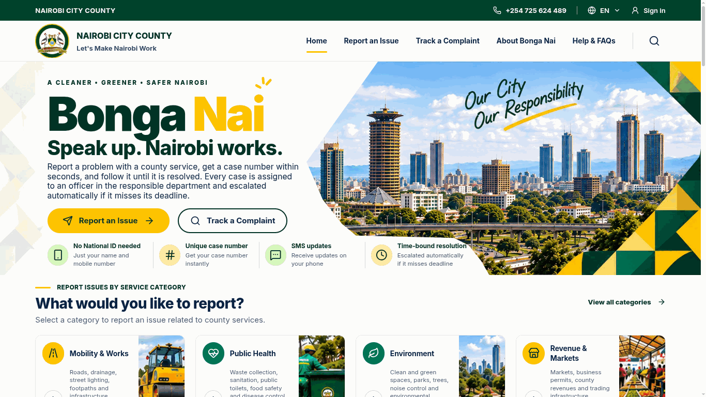
Bonga Nai landing page, phone (live) — bonga/04-landing-phone.png
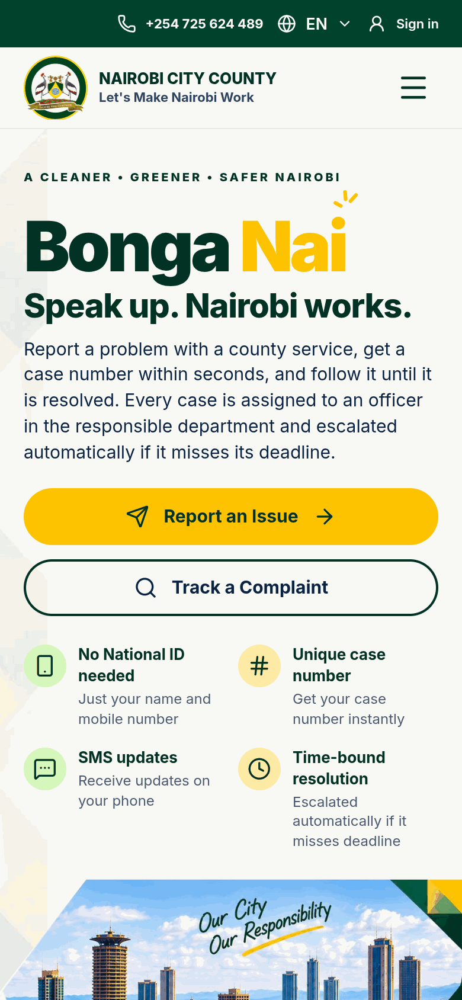
Officer sign-in (live Bonga) — bonga/03-employee-login.png
Resident sign-in, phone (live Bonga) — bonga/06-citizen-login-phone.png
Resident files a complaint (V01)
cms-pilot, phone view
Resident home after sign-in — cms-pilot/40-citizen-home-phone.png
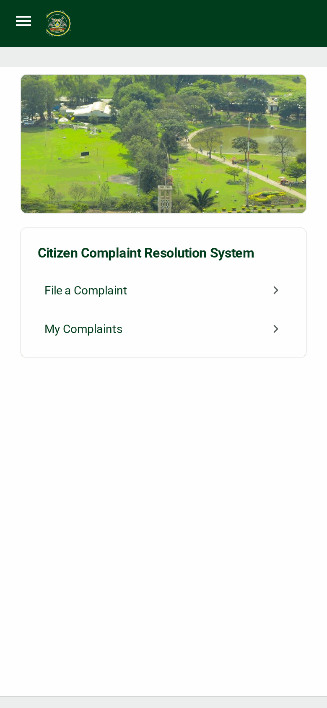
Step 1 of 3 — complaint type and sub-type — cms-pilot/41-create-step1-phone.png
Step 2 of 3 — sub-county, ward and map pin — cms-pilot/42-create-step2-phone.png
Step 3 of 3 — description, consent, attachments — cms-pilot/43-create-step3-phone.png
Complaint submitted — number and PDF buttons — cms-pilot/44-success-page-phone.png
Front desk files on a resident's behalf (V02)
cms-pilot, CSR
Create Complaint (staff) — cms-pilot/20-create-complaint-staff.png
Form filled: channel, phone, name, category, location, description — cms-pilot/22-create-complaint-staff-filled.png
Submitted — complaint number and PDF buttons — cms-pilot/23-staff-complaint-success.png
Officer home, menus and inbox (V03)
Bonga (live, read-only) and cms-pilot
Officer home (live Bonga, GRO + CSR) — bonga/10-employee-home-gro.png
Profile menu (live Bonga; officer name blurred) — bonga/11-employee-profile-menu.png
Language menu (live Bonga) — bonga/12-employee-language-menu.png
GRO inbox (cms-pilot) — cms-pilot/13-inbox-gro.png
GRO assigns or rejects (V03)
cms-pilot, GRO
Complaint details — Pending for assignment — cms-pilot/15-complaint-details-gro.png
Complaint details, full page — location and timeline — cms-pilot/16-complaint-details-gro-full.png
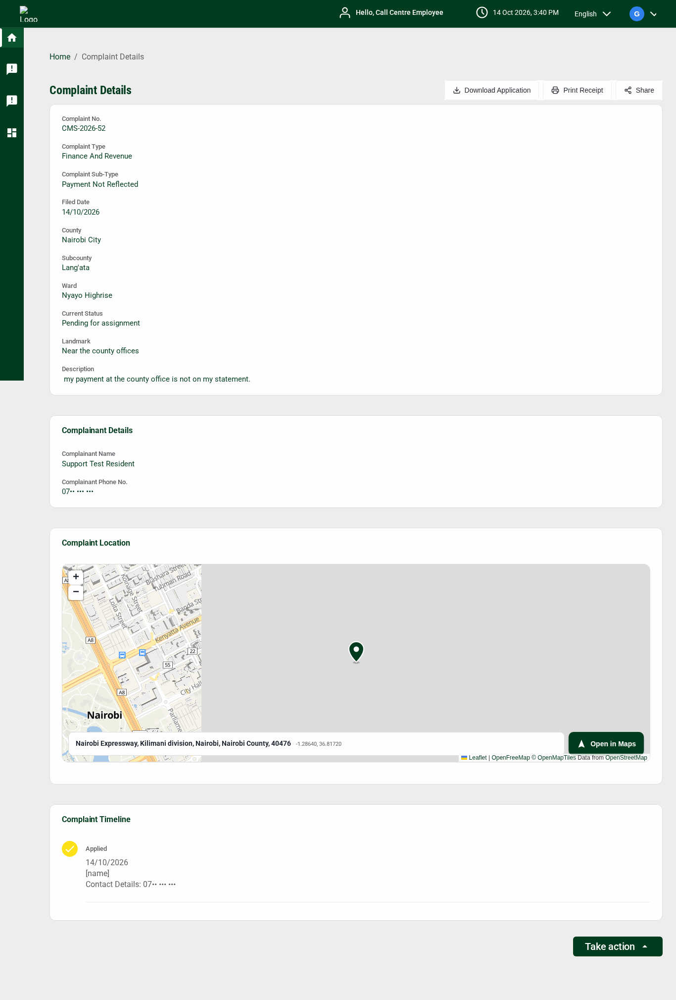
Take Action menu: Reject, Assign, WITHDRAW (raw label — finding) — cms-pilot/17-take-action-menu-gro.png
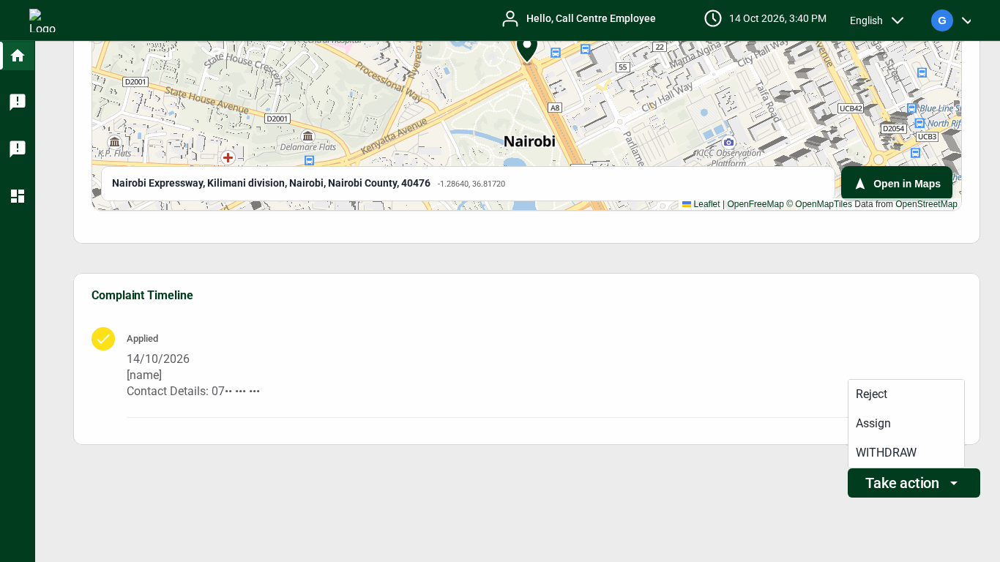
Assign dialog — searchable list of last-mile officers (names redacted) — cms-pilot/18-assign-dialog-list.png
Reject dialog (not submitted) — cms-pilot/19-reject-dialog.png
Complaint details on live Bonga (test complaint BNG-2026-194) — bonga/15-complaint-details-gro.png
Last-mile officer (V04)
cms-pilot, PGR_LME
Officer inbox — cms-pilot/30-inbox-lme.png
Complaint details — cms-pilot/31-complaint-details-lme.png
Complaint details with timeline — cms-pilot/32-complaint-details-lme-full.png
Take Action menu: Re-assign, Reject, Escalate, Resolve, REASSIGNTOGRO (raw label — finding) — not captured yet
Resolve dialog — not captured yet
Escalate dialog — choose the senior officer — not captured yet
Reassign to GRO dialog — not captured yet
Re-assign dialog (same department) — not captured yet
Resident follow-up (V05)
cms-pilot, phone view
My Complaints — cms-pilot/46-my-complaints-phone.png
Resolved complaint — PDF buttons — cms-pilot/47-complaint-details-phone.png
Resolved complaint, full page — timeline with Rate and Re-open — cms-pilot/48-complaint-details-phone-full.png
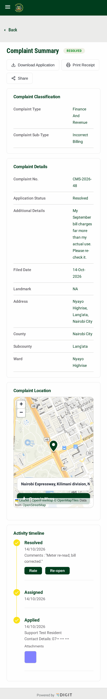
Share dialog (phone) — cms-pilot/49-share-dialog-phone.png
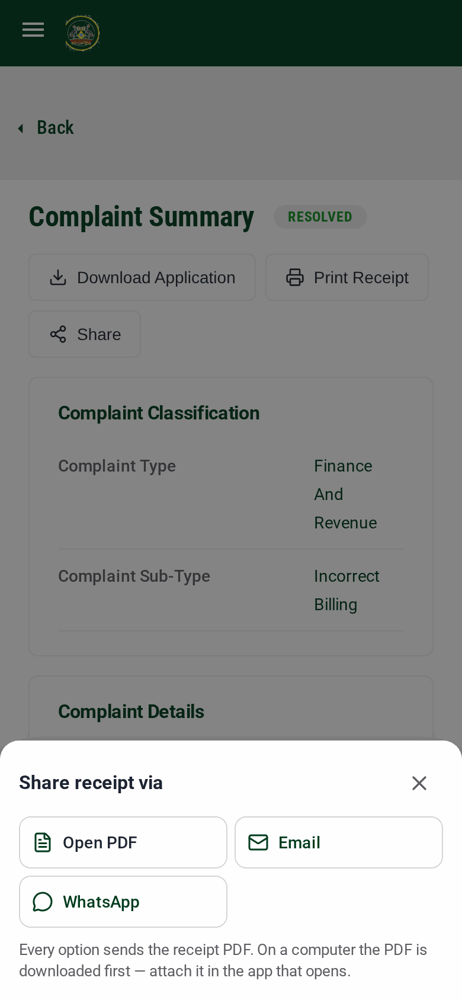
Rate — five faces — cms-pilot/50-rate-page-phone.png
Rated — note "improve mSeva" (wrong product name — finding) — cms-pilot/51-rate-done-phone.png
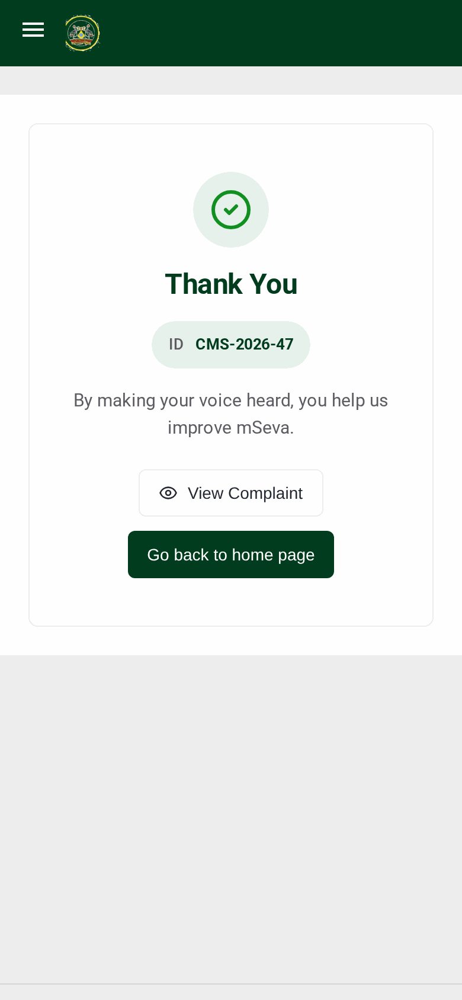
Re-open, step 1 — reason — cms-pilot/52-reopen-reason-phone.png
Re-open, step 2 — details — not captured yet
Withdraw — confirmation with optional reason — cms-pilot/54-withdraw-confirm-phone.png
Withdrawn — timeline shows raw WITHDRAW (finding; name blurred) — cms-pilot/55-withdraw-done-phone.png
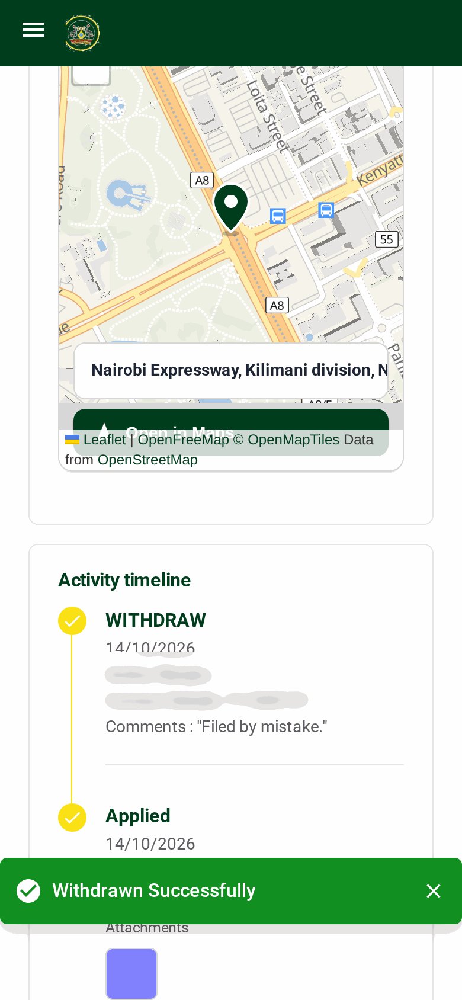
Leadership (V06)
cms-pilot
Dashboard — cms-pilot/24-dashboard.png
Export menu — Excel, CSV, PDF — cms-pilot/26-dashboard-export-menu.png
Configurator, read-only (V10)
cms-pilot, ADMIN
Configurator sign-in — cms-pilot/60-configurator-login.png
Management home — cms-pilot/61-configurator-home.png
Complaint types — cms-pilot/62-configurator-complaint-hierarchy.png
Labels — cms-pilot/63-configurator-localization.png
Role permissions — cms-pilot/64-configurator-role-actions.png
Workflow — cms-pilot/65-configurator-workflow.png
Employees (names redacted) — cms-pilot/66-configurator-employees.png
Notification log — cms-pilot/68-configurator-notification-log.png